55 saved questions rebuilt from local capture only. Missed: Q2, Q4, Q5, Q9, Q20, Q21, Q29, Q40, Q49, Q55.
Q1
easy QID 22405
Correct
A 64-year-old female patient presents with advanced rectal cancer and severe right flank pain, fever, and hypotension. The patient is stabilized in the emergency room and percutaneous nephrostomy was subsequently performed as shown. After the procedure, the patient becomes acutely hypotensive with fever, sweating, rigors, and tachycardia. Which of the following is the most likely diagnosis?
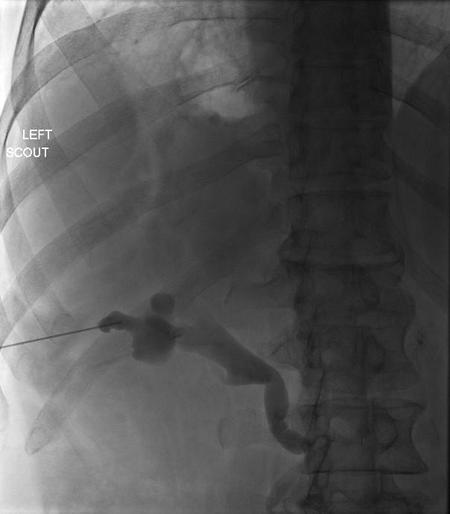
AMyocardial infarction(0%)
BAnaphylactic reaction to iodinated contrast(6%)
CPulmonary embolism(0%)
DTransient bacteremia(92%)
EVasovagal response(2%)
Your answerD
Correct answerD. Transient bacteremia
Vital Concept
Transient bacteremia and sepsis are the most common complications after percutaneous nephrostomy for pyonephrosis, requiring intensive intra- and post-procedural monitoring and fluid resuscitation. All patients should receive pre-procedural broad-spectrum antibiotics and rapid decompression of the involved renal collecting system with minimal manipulation to reduce risk related to these complications.
Explanation
Transient bacteremia
The patient presented with clinical and imaging findings most in keeping with pyonephrosis and associated sepsis. The patient was managed appropriately with emergent urinary drainage. However, frequently after drainage of an infected urinary system, the patient can experience transient worsening of bacteremia, even after appropriate pre-procedure antibiotics. This is presumably related to the acute pressurization of the collecting system during contrast pyelography. It most often presents with sudden worsening of hypotension, fever, chills, rigors, and tachycardia soon after urinary drainage. It is best treated with IV fluid boluses and continued antibiotic therapy.
Incorrect Answers:
A. Acute hypotension and tachycardia can be seen in the setting of myocardial infarction, but given the clinical scenario, another etiology is more likely.
B. Anaphylactoid reactions to iodinated contrast may present in a similar fashion to that described above, but a more likely etiology is provided.
C. Pulmonary embolus classically presents with onset of pleuritic chest pain, shortness of breath, and hypoxia. Though atypical presentations are seen, transient bacteremia is still the most likely etiology in this case.
E. Vasovagal response typically presents with hypotension and bradycardia, rather than tachycardia. Typically, this is self-limited but may require fluid boluses and atropine.
Vital Concept: Transient bacteremia and sepsis are the most common complications after percutaneous nephrostomy for pyonephrosis, requiring intensive intra- and post-procedural monitoring and fluid resuscitation. All patients should receive pre-procedural broad-spectrum antibiotics and rapid decompression of the involved renal collecting system with minimal manipulation to reduce risk related to these complications.
Q2
hard QID 5023
Incorrect
A 32 cm acrylic phantom is placed in the CT gantry. The following measurements were obtained with the pitch set at 1.25: CTDI center = 15 mGy; CTDI periphery = 30 mGy. Which of the following is the CTDIvol?
A10 mGy(2%)
B16 mGy(7%)
C20 mGy(57%)
D25 mGy(29%)
E30 mGy(4%)
Your answerE
Correct answerC. 20 mGy
Vital Concept
CTDIw (mGy) is closer to the human dose profile compared to CTDI100. CTDIvol (mGy) is obtained by dividing CTDIw by pitch factor.
Explanation
20 mGy
CTDIw = (1/3 × CTDI center) + (2/3 × CTDI peripheral) creates a weighted average across the phantom, emphasizing peripheral dose distribution. CTDIw = (1/3 × 15) + (2/3 × 30) = 25 mGy.
CTDIvol represents the average helical CT dose per unit volume.
Incorrect Answers:
A.B.D.E. According to the formula; CTDIvol = CTDIW/Pitch. The answer is 20.
Vital Concept: CTDIw (mGy) is closer to the human dose profile compared to CTDI100. CTDIvol (mGy) is obtained by dividing CTDIw by pitch factor.
Q3
moderate QID 22433
Correct
A 63-year-old female patient undergoes the procedure shown. Which of the following is the most likely indication?
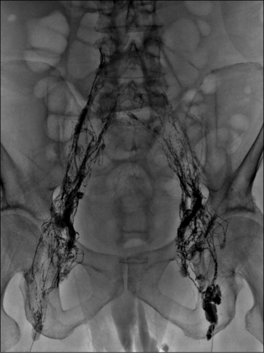
ABlue toe syndrome(2%)
BDeep venous thrombosis(4%)
CLower extremity claudication(6%)
DChylothorax(80%)
EVaricose veins(9%)
Your answerD
Correct answerD. Chylothorax
Vital Concept
Lymphangiography serves both diagnostic and therapeutic purposes in chylothorax. Diagnostically, it identifies leak locations and lymphatic anatomy. Therapeutically, oil contrast agents can occlude lymphatic leak points and provide some symptomatic relief. Coiling is used for more definitive treatment of a clear leak.
Explanation
Chylothorax
The procedure shown is an example of lymphangiography, which is now typically performed for evaluation of suspected thoracic duct leak in the setting of chylothorax and in preparation for thoracic duct embolization. In this procedure, ethiodized oil is injected with ultrasound guidance into the groin lymph nodes.
The contrast is followed to the cisterna chyli, which is accessed percutaneously, followed by selection of the thoracic duct with a small-caliber catheter. If a thoracic duct leak is demonstrated by contrast injection, the duct may then be coil embolized.
A chylothorax, also known as chylous pleural effusion, is an uncommon cause of pleural effusion with a wide differential diagnosis characterized by the accumulation of bacteriostatic chyle in the pleural space. The pleural fluid will have either or both triglycerides > 110 mg/dL and the presence of chylomicrons.
Incorrect Answers:
A. Blue toe syndrome is often seen in the setting of distal aortic or aortoiliac atherosclerotic disease. It is characterized by the spontaneous onset of painful unilateral toe discoloration related to distal atheroembolism. It is frequently treated acutely with anticoagulant therapy. Patients may undergo stent placement or surgical treatment for associated embolism-producing lesions.
B. Deep venous thrombosis is best visualized in the lower extremity via ultrasound. It is most frequently treated with systemic anticoagulation, unless anticoagulation is contraindicated. In these cases, the patient may undergo IVC filter placement.
C. Lower extremity claudication is frequently related to iliac or femoral arterial atherosclerotic narrowing. Most frequently, arterial angiography is performed for evaluation either by catheter techniques, CT, or MRI.
E. Lower extremity varicose veins are most frequently related to incompetent venous valves with subsequent reflux of deep venous drainage into the superficial veins, frequently involving the saphenous vein. This is frequently treated with a combination of compression garments, percutaneous sclerotherapy, and endovenous thermal ablation techniques such as laser embolotherapy.
Vital Concept: Lymphangiography serves both diagnostic and therapeutic purposes in chylothorax. Diagnostically, it identifies leak locations and lymphatic anatomy. Therapeutically, oil contrast agents can occlude lymphatic leak points and provide some symptomatic relief. Coiling is used for more definitive treatment of a clear leak.
Q4
hard QID 47249
Incorrect
Which of the following is the most reliable sign of a chronic time frame for deep venous thrombosis (DVT)?
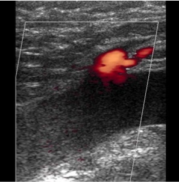
ABright echotexture(5%)
BPartial compressibility(3%)
CEstablishment on prior imaging(72%)
DThickened vessel wall(6%)
EA normal caliber or contracted appearance of the involved vein(13%)
Your answerE
Correct answerC. Establishment on prior imaging
Vital Concept
The most reliable sign of a chronic time frame for deep venous thrombosis (DVT) is establishing its temporal presence by looking at prior imaging.
Explanation
Establishment on prior imaging
Over time, the ultrasound (US) appearance of deep venous thrombosis (DVT) will evolve, as discussed below with the other answer choices. With this said, trying to determine the age of a DVT based on imaging features alone is often not possible. The most reliable sign of chronic DVT is establishing its temporal presence.
Incorrect Answers:
A. D. In some areas of the vein, the thrombus may become increasingly echogenic, and the intima of the vein's wall may thicken, becoming echogenic and resistant to compression. These are not the most consistent findings, however.
B. However, other areas of the vein may revert to normal, both in appearance and in response to compression. By 12 to 24 months after an acute DVT, about 50% of patients will have complete US resolution of thrombus and normally compressible proximal leg veins. This is associated with the restoration of antegrade venous flow and frequently with the development of venous reflux in a previously occluded vein. This is not the most consistent finding, however.
E. If the clot persists, the vessel often returns to normal caliber or has a contracted appearance. This is not the most consistent finding, however.
Vital Concept: The most reliable sign of a chronic time frame for deep venous thrombosis (DVT) is establishing its temporal presence by looking at prior imaging.
Q5
hard QID 44072
Incorrect
Regarding the diagnosis of endometrial cancer, which of the following statements is true?
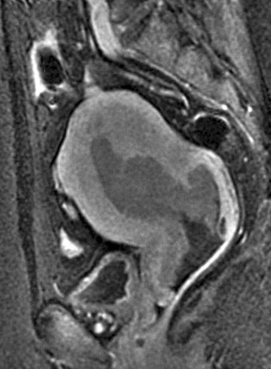
AIt is primarily seen in premenopausal women(1%)
BWhite women are less frequently affected than women of other races(9%)
CUnopposed progesterone is a risk factor(7%)
DIt is the most common gynecological malignancy in the United States(68%)
EMost tumors present at a later stage(15%)
Your answerB
Correct answerD. It is the most common gynecological malignancy in the United States
Vital Concept
Endometrial cancer is the most common gynecologic malignancy in the United States, predominantly affecting postmenopausal women with risk factors including unopposed estrogen exposure.
Explanation
It is the most common gynecological malignancy in the United States
Endometrial cancer is the most common gynecological malignancy in the United States.
Incorrect Answers:
A. It is a disease of postmenopausal women, with a peak age between 55 to 70 years of age.
B. White women are more often affected than women of other races.
C. Unopposed estrogen (not progesterone) is the primary risk factor, as is seen in nulliparity, obesity, infertility, polycystic ovarian disease, and hormone replacement.
E. It frequently presents with postmenopausal bleeding. In approximately 80% of cases it is diagnosed at an early stage.
Vital Concept: Endometrial cancer is the most common gynecologic malignancy in the United States, predominantly affecting postmenopausal women with risk factors including unopposed estrogen exposure.
Q6
easy QID 21601
Correct
A 73-year-old male patient presents with absent femoral pulses, bilateral claudication, and impotence, in addition to the angiographic findings shown. Which of the following is the diagnosis?
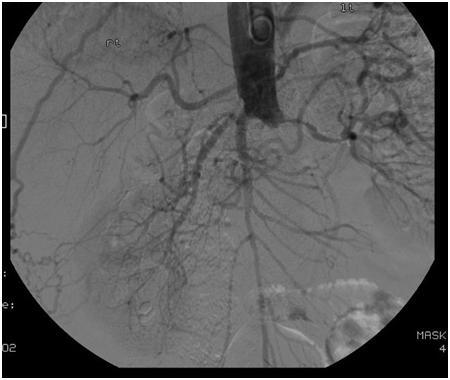
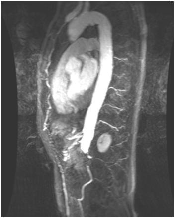
AMay-Thurner syndrome(0%)
BLeriche syndrome(91%)
CParinaud's syndrome(1%)
DMedian arcuate ligament syndrome(0%)
EMid-aortic syndrome(8%)
Your answerB
Correct answerB. Leriche syndrome
Vital Concept
Leriche syndrome is the classic presentation of aortoiliac occlusive disease consisting of impotence, bilateral buttock claudication, and absent femoral pulses.
Explanation
Leriche syndrome
Leriche syndrome is a constellation of findings related to chronic ischemia of the buttocks and pelvic organs related to occlusion or severe stenosis of the aortic bifurcation or iliac arteries. This is seen in the catheter (first) and MR (second) angiographic images as an abrupt cutoff of the infrarenal aorta (red arrows) The Leriche triad includes absent femoral pulses, bilateral claudication, and impotence.
Incorrect Answers:
A. May-Thurner syndrome is chronic thrombosis of the left common iliac vein related to an overlying/crossing right common iliac artery. It is frequently treated with angioplasty and stenting.
C. Parinaud's syndrome is paralysis of upward gaze related to compression of the superior colliculi from a mass, usually within the pineal gland.
D. Median arcuate ligament syndrome is characterized by external compression of the celiac artery by the median arcuate ligament, which is a muscular band between the left and right diaphragmatic crura. It is diagnosed in the setting of compression of the celiac artery with an upward hook configuration with associated post-stenotic dilatation. It is best demonstrated in the sagittal projection and is most frequently seen in thin women with a recent history of weight loss, which may be related to loss of intra-abdominal fat that normally separates the celiac artery from the median arcuate ligament. The treatment of choice is surgical division of the median arcuate ligament.
E. Mid-aortic syndrome is an uncommon syndrome characterized by nonatherosclerotic narrowing of the abdominal aorta and often of the renal arteries, which may be accompanied by hypertension, claudication, and renal failure. It is of unknown etiology but is thought to develop in utero.
Vital Concept: Leriche syndrome is the classic presentation of aortoiliac occlusive disease consisting of impotence, bilateral buttock claudication, and absent femoral pulses.
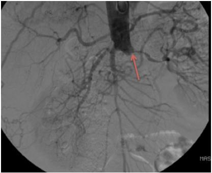
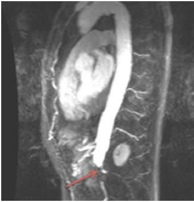
Q7
moderate QID 38112
Correct
Bone scans are shown below in the case of metastatic disease and then trauma. Which of the following findings most suggest malignancy as the etiology of the rib lesions as opposed to trauma?
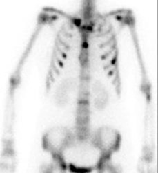
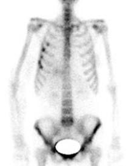
AThe uptake is focal.(5%)
BThe uptake is seen in contiguous ribs.(2%)
CAdditional foci of osseous uptake.(90%)
DVertical orientation of multiple lesions.(2%)
EResolution on short interval follow-up.(1%)
Your answerC
Correct answerC. Additional foci of osseous uptake.
Explanation
Additional foci of osseous uptake.
The appearance on the lower image is that of fractures, while that on the upper image is of metastatic disease. Although it is usually not a diagnostic dilemma because the classic pattern of metastatic disease is that of multiple, focal lesions distributed randomly in the skeleton (yellow arrows), there are times when isolated rib metastases can be difficult to distinguish from healing rib fractures. The findings of trauma can mimic the appearance of metastasis. Patients should be closely questioned for any history of trauma.
Incorrect Answers:
A. Focality of osseous uptake can be seen in both trauma and metastatic disease. Look to distribution of multiple focal lesions to better differentiate between these entities (see other explanations for details). As progression occurs, metastatic lesions track along the bone in a linear fashion rather than remaining focal. Radiographic correlation may show the cortical disruption or callous formation.
B. D. In the ribs, a vertical alignment (green arrows) of focal abnormal uptake in several or successive ribs (blue arrows) is classic for trauma. This nonrandom pattern is not expected in metastatic disease.
E. Because bone scan frequently detects fractures not seen on radiographs, correlation with CT or short-term follow-up bone scan may be needed if no fracture is seen on the radiograph.
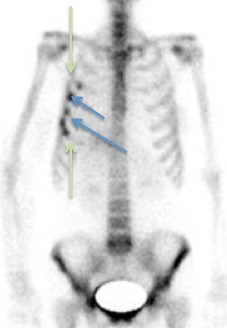
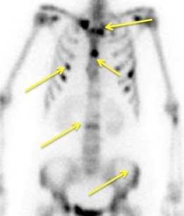
Q8
easy QID 24105
Correct
Which of the following features is often seen in benign reactive lymph nodes?
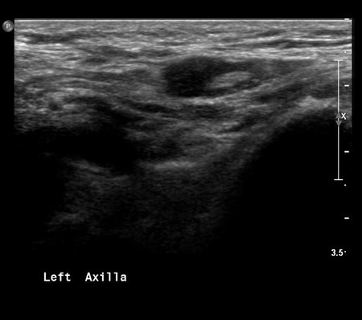
AIncrease in size(96%)
BIrregularity of the margins(1%)
CAltered morphology(1%)
DAbsent fatty hilum(1%)
Your answerA
Correct answerA. Increase in size
Vital Concept
Grey scale sonographic features that help to identify metastatic and lymphomatous lymph nodes include size, shape and internal architecture (loss of hilar architecture, presence of intranodal necrosis and calcification).
Explanation
Increase in size
Suspicious axillary lymph nodes demonstrate cortical thickening (particularly focal or eccentric; yellow arrows), hilar effacement or indentation, loss of normal oval/reniform shape becoming round, completely hypoechoic appearance, and spiculated (blue arrow) or irregular margins. The most specific finding is eccentric cortical thickening with hilar indentation, differentiating malignant nodes from reactive lymphadenopathy which typically maintains symmetric cortical thickening and preserved fatty hilum. Next step is ultrasound-guided fine-needle aspiration or core biopsy targeting the thickest cortical area using high-frequency linear transducer, as morphologic features are more predictive than size for detecting metastatic disease.
Incorrect Answers:
B.C.D. Features that are suspicious for malignancy in a lymph node include irregular margins, morphology, lack of a fatty hilum, or increased density.
Vital Concept: Grey scale sonographic features that help to identify metastatic and lymphomatous lymph nodes include size, shape and internal architecture (loss of hilar architecture, presence of intranodal necrosis and calcification).
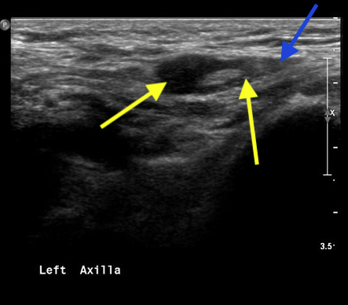
Q9
hard QID 2847
Incorrect
Which of the following is the likely diagnosis of the lesion shown?
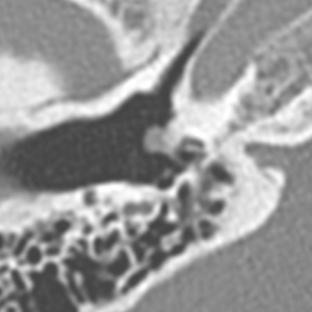
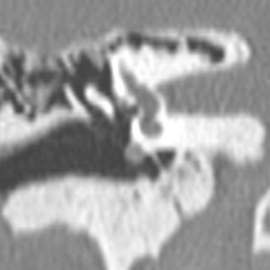
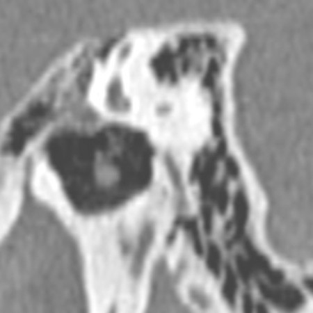
AGlomus tympanicum(12%)
BMiddle ear schwannoma(19%)
CCongenital cholesteatoma(44%)
DMiddle ear adenoma(25%)
Your answerA
Correct answerC. Congenital cholesteatoma
Vital Concept
Glomus tympanicum, schwannoma, middle ear adenoma and acquired cholesteatoma can all arise from/involve the cochlear promontory. Congenital cholesteatoma characteristically involves/arises from the petrous apex.
Explanation
Congenital cholesteatoma
The images show a mass of the cochlear promontory (yellow arrow). Congenital cholesteatomas do not characteristically arise from this location and most commonly arise from/involve the petrous apex. Acquired cholesteatomas can occur in this location, but should demonstrate TM involvement for more confident differentiation.
Incorrect Answers:
A. Glomus tympanicum is the most common primary neoplasm of the middle ear and the second most common tumor of the temporal bone. The cochlear promontory is a typical location for this lesion to arise.
B. Schwannoma is one of the common benign middle ear space tumors. Middle ear space schwannomas may originate from the nerves of the tympanic cavity or by extensions from outside the middle ear space. Schwannoma of the Jacobson nerve characteristically involves the cochlear promontory.
D. Middle ear adenoma is a rare benign epithelial tumor with neuroendocrine properties that can specifically arise from/involve the cochlear promontory.
Vital Concept: Glomus tympanicum, schwannoma, middle ear adenoma and acquired cholesteatoma can all arise from/involve the cochlear promontory. Congenital cholesteatoma characteristically involves/arises from the petrous apex.
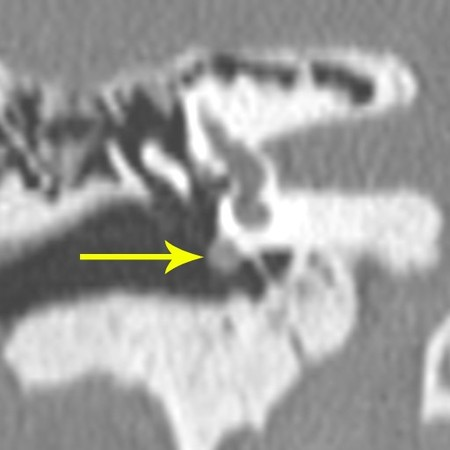
Q10
easy QID 22585
Correct
An 8-month-old male patient presents with increasing head circumference, headache, nausea, and vomiting. Which of the following is the most likely diagnosis?
Differentiation between choroid plexus papilloma and carcinoma is difficult on imaging alone and ultimately depends on histology. Carcinomas typically show extensive parenchymal invasion through the ventricular wall and peritumoral vasogenic edema, while papillomas remain intraventricular. Carcinomas are more heterogeneous due to hemorrhage and cyst formation.
Explanation
Choroid plexus papilloma/carcinoma
Choroid plexus papillomas are WHO grade I neoplasms arising from choroid plexus epithelial cells. Frequently they are intraventricular (blue arrow) in location, with strikingly lobulated margins (yellow arrows). They are usually isodense or hyperdense to cerebral tissue and may have calcifications. On MR imaging, they are iso- to hypointense on T1WI and iso- to hyperintense on T2WI with marked enhancement (red arrow) on post-contrast imaging. They are frequently associated with hydrocephalus. They are most commonly located at the atrium of the lateral ventricles (about 50%), with about 40% within the fourth ventricle and a much smaller proportion in the roof of the third ventricle. Choroid plexus papillomas are notoriously difficult to distinguish from choroid plexus carcinomas on imaging, such that they are often followed over long periods of time for evidence of invasion. Often, definitive diagnosis may only be made on pathologic analysis. Heterogeneity of enhancement and increasing edema along the adjacent brain parenchyma may be the only imaging features to suggest invasive choroid plexus carcinoma. However, these are inconsistent at best.
Incorrect Answers:
A. Pilocytic astrocytomas are WHO grade I tumors that typically present as cystic cerebellar lesions characterized as having a “cyst with enhancing mural nodule” appearance. They may also arise in the optic pathways of patients with neurofibromatosis type 1. On CT, they have a characteristic low-attenuation cystic appearance with peripheral enhancing nodularity. They may also have peripheral calcifications. On MRI, they are typically markedly T2 hyperintense with an enhancing nodular component along their periphery when encountered in the cerebellum. They are most commonly present in children aged 5-15 years and grow slowly, producing symptoms as a result of mass effect, and have a good prognosis when completely resected.
B. Germinoma is a common midline lesion arising in the pineal gland and suprasellar regions. They tend to present with endocrinopathies when in the suprasellar location, while pineal region masses tend to produce obstructive hydrocephalus and Parinaud syndrome by tectal compression. They tend to be well-circumscribed, hyperdense to brain parenchyma, with prominent enhancement on post-contrast imaging. On MRI, they tend to be iso- or hyperintense to grey matter on T1- and T2-weighted imaging. They may contain internal T2 hyperintense cystic/necrotic foci. One characteristic finding of pineal germinomas is that they tend to “engulf” pineal calcifications, while pineoblastomas and pineocytomas tend to “explode” pineal calcifications.
C. Craniopharyngiomas are benign WHO grade I tumors arising in the sellar region from remnants of Rathke's pouch epithelium. They are typically large, lobular lesions with internal cystic components and prominent calcifications. The cysts are of variable signal intensity on T1- and T2-weighted imaging, depending on their contents. They typically have marked enhancement, especially at the cyst walls. There are two types: adamantinomatous and papillary. Adamantinomatous type is most common in pediatric populations and demonstrates the typical solid/cystic appearance with internal calcification and hemorrhage. Papillary type is more common in adults and is typically solid with infrequent calcification.
E. Subependymal giant cell astrocytoma (SEGA) tumors are WHO grade I tumors arising in the subependymal regions of patients with tuberous sclerosis. They are lobular slow-growing tumors arising near the foramen of Monro and typically demonstrate marked enhancement. They are typically curable with complete resection. In patients in which SEGA is suspected, look for other signs of tuberous sclerosis, such as subependymal nodules and cortical tubers.
Vital Concept: Differentiation between choroid plexus papilloma and carcinoma is difficult on imaging alone and ultimately depends on histology. Carcinomas typically show extensive parenchymal invasion through the ventricular wall and peritumoral vasogenic edema, while papillomas remain intraventricular. Carcinomas are more heterogeneous due to hemorrhage and cyst formation.
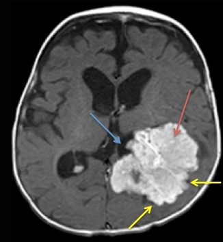
Q11
moderate QID 56257
Correct
Which of the following structures does the green arrow point to in the provided contrast-enhanced CT image?
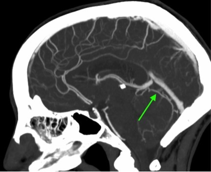
APrecentral cerebellar vein(7%)
BSuperior vermian vein(86%)
CAnterior pontomesencephalic vein(2%)
DInferior vermian vein(5%)
Your answerB
Correct answerB. Superior vermian vein
Vital Concept
Galenic drainage is the superior venous route where the precentral cerebellar vein and superior vermian vein drain the paleocerebellum to the vein of Galen, with anastomoses to petrosal and tentorial drainage routes providing collateral pathways.
Explanation
Superior vermian vein
The posterior fossa venous anatomy is not commonly referenced in clinical practice today, although these structures were used for anatomic localization on conventional angiography. Venous anatomy is often forgotten, but very important. While the dural venous sinuses are too easy to test, knowledge of the posterior fossa venous system is pertinent. There are three major posterior fossa drainage systems. The superior (galenic) group is what is noted in the image presented, specifically the superior vermian vein (green arrow). This subsequently drains into the superior cerebellar vein (yellow arrow), and then into the vein of Galen (orange arrow).
Incorrect Answers:
A. The superior cerebellar vein (yellow arrow) receives drainage from the superior vermian vein.
C. The anterior pontomesencephalic vein is not pictured, but courses along the anterior aspect of the pons.
D. The inferior vermian vein (red arrow) is only partially visualized. There are actually two inferior vermian veins, which exist as paired structures just off midline. These drain inferiorly rather than superiorly into the vein of Galen.
Vital Concept: Galenic drainage is the superior venous route where the precentral cerebellar vein and superior vermian vein drain the paleocerebellum to the vein of Galen, with anastomoses to petrosal and tentorial drainage routes providing collateral pathways.
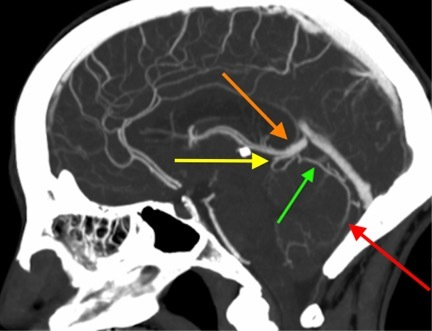
Q12
hard QID 2738
Correct
Which of the following imaging planes on cardiac MRI best allows assessment of both the mitral valve and tricuspid valve?
AShort axis(6%)
BHorizontal long axis(73%)
CVertical long axis(15%)
DOblique sagittal(6%)
Your answerB
Correct answerB. Horizontal long axis
Vital Concept
The standard cardiac MRI imaging planes are derived from the long axis of the heart, and include short axis, horizontal long axis (four-chamber) and vertical long axis (two-chamber) planes.
Explanation
Horizontal long axis
The standard cardiac MRI imaging planes are derived from the long axis of the heart. The long axis of the heart is defined by a line between the cardiac apex and the middle of the mitral valve. The short-axis plane is perpendicular to this line and passes through the mid left ventricle. The horizontal long-axis plane is the horizontal plane that is orthogonal to the short axis; the vertical long-axis plane is the plane orthogonal to the horizontal long-axis plane. The horizontal long-axis plane is also known as the four-chamber view; since all four chambers are visualized, both the mitral and tricuspid valves are usually visible in this plane.
Incorrect Answers:
A. The short axis plane is perpendicular to the long axis of the heart and passes through the mid left ventricle.
C. The vertical long axis plane is the plane orthogonal to the horizontal long axis plane and is also known as the two-chamber view.
D. This plane is optimal for evaluating the aorta as it is obtained parallel to the aortic axis.
Vital Concept: The standard cardiac MRI imaging planes are derived from the long axis of the heart, and include short axis, horizontal long axis (four-chamber) and vertical long axis (two-chamber) planes.
Q13
moderate QID 38121
Correct
A 13-year-old female patient with severe hypertension presents for a study with and without captopril. Baseline images are labeled 1-2 min, and post-captopril images are labeled 20 min. Which of the following radiopharmaceuticals was used?
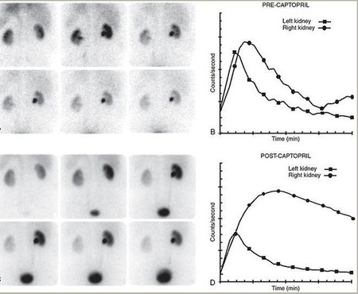
ATc99m – DTPA(16%)
BTc99m – DMSA(6%)
CTc99m – MDP(1%)
DTc99m – MAG3(78%)
EI131- OIH(0%)
Your answerD
Correct answerD. Tc99m – MAG3
Explanation
Tc99m – MAG3
Captopril renography is a sensitive, noninvasive functional method for diagnosing renovascular hypertension. ACE inhibitors such as captopril work by blocking the conversion of angiotensin I to angiotensin II, which causes GFR to fall in renal vascular hypertension patients relying on the compensatory efferent arterial constriction that attempts to maintain perfusion pressure and GFR. The protocol involves two radionuclide studies being performed: one with and one without ACE inhibitor. A baseline study is done because the kidney could have an abnormal function due to numerous etiologies. In patients with renin-dependent renovascular hypertension, the decreased blood flow to the affected kidney is most often not seen on baseline or conventional renography (top images). ACE inhibitors result in efferent arteriole dilatation and cause a drop in GFR, which leads to decreased urine flow that can be visualized during the functional portion of the study. In patients with renovascular hypertension, function thus declines in the presence of ACE inhibitors.
In general, the diagnostic pattern seen will depend on the type of radiopharmaceutical used. In this case, MAG-3 (mercaptoacetyltriglycin) was utilized. MAG-3 is a renal imaging agent with minimal glomerular filtration. It is cleared almost exclusively by tubular secretion. Tubular uptake and secretion are not affected by GFR changes from the ACE inhibitor. Since the tubular cells retain their functional capacity, the kidney will continue to accumulate tubular agents such as MAG3. The primary finding will be cortical retention (entire right kidney, in this case) following ACE inhibitor administration.
Incorrect Answers:
A. If the glomerular agent Tc-99m DTPA (diethylenetriamine pentaacetic acid) is used, the ACE inhibitor–induced drop in GFR will lead to a marked drop in radiotracer filtration and uptake.
B. DMSA (dimercaptosuccinic acid) is a cortical binding agent. It will not be taken up in areas of active infection or scarring. It is often used following pyelonephritis to evaluate for resolution or residual scarring. It is not used in ACE inhibitor studies.
C. MDP (medronic acid) is a bisphosphonate analogue and is used in bone scintigraphy, not renal imaging.
E. OIH (hippuran) is cleared by tubular secretion and by glomerular filtration. It has high first-pass extraction. Therefore, hippuran is used to accurately measure ERPF.
Q14
moderate QID 41453
Correct
Which of the following percentage of a non-pregnant radiation worker's annual dose limit is a fetus's dose limit?
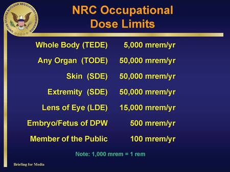
A5%(6%)
B10%(89%)
C25%(1%)
D50%(1%)
E100%(2%)
Your answerB
Correct answerB. 10%
Explanation
10%
It is important to commit to memory the various radiation dose limits, as they are frequently tested. They are as follows:
Dose limit to a member of the general public = 1 mSv or 100 mrem/yr (0.02 mSv/ hr or 2 mrem/hr)
Total background annual radiation dose = 6.2 mSv or 620 mrem (3.1 mSv (310 mrem) from natural background + 3.1 mSv (310 mrem) from man-made sources)
Dose limit for a fetus = 5 mSv or 500 mrem/yr (roughly 10% of the limit for a radiation worker)
Total effective occupational dose limit (whole body) for a radiation worker = 50 mSv or 5000 mrem
Dose limit for a radiation worker’s lens = 150 mSv or 15000 mrem
Dose limit for a radiation worker’s extremity = 500 mSv or 50000 mrem
Remember the conversion from Sv to rem as well, as this is a trick used by exam question writers: * 1Sv = 100 rem, or 1 mSv = 100 mrem
Q15
easy QID 18105
Correct
Which of the following is the mechanism of action of the radiopharmaceuticals used in this study?
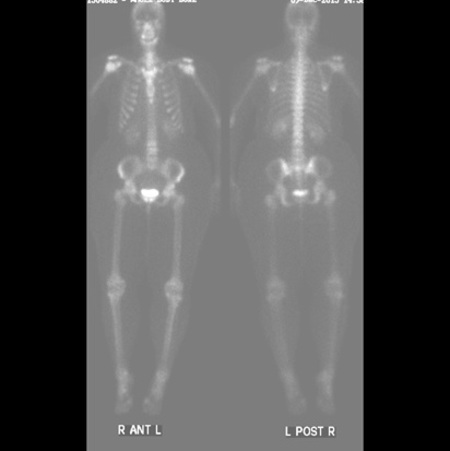
AAdsorption to crystals in bone matrix(94%)
BMitochondrial uptake(2%)
CCapillary blockade(0%)
DPhagocytosis(3%)
Your answerA
Correct answerA. Adsorption to crystals in bone matrix
Explanation
Adsorption to crystals in bone matrix
Tc99m-MDP, which is used for performing different types of bone scans, as shown in the image, acts by adsorption to the hydroxyapatite crystals in bone.
Incorrect Answers:
B. This is the mechanism of action of Tc99m-sestamibi, used in cardiac and parathyroid scintigraphy.
C. This is the mechanism of action of Tc99m-MAA, used in lung perfusion scans.
D. This is the mechanism of action of Tc99m-sulphur colloid, used in hepatic, gastric-emptying, and bone marrow scintigraphy.
Q16
easy QID 21099
Correct
Which of the following describes the liver signal in this image?
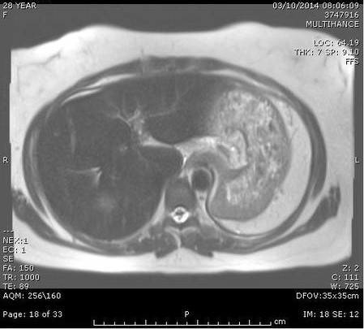
ANormal(4%)
BHigher than normal(1%)
CLower than normal(92%)
DNot able to be determined from one slice(3%)
Your answerC
Correct answerC. Lower than normal
Vital Concept
Hemochromatosis is a condition caused by the chronic accumulation of iron due to a variety of causes, including hereditary hemochromatosis, repeated blood transfusions, excessive iron therapy, or liver disease. In hemochromatosis, the liver on in-phase sequence (which is usually obtained second, and thus more susceptible to T2* effects) demonstrates low signal, whereas the out-of-phase sequence demonstrates higher signal. On T2 weighted imaging (as in this case), the liver signal is lower than muscle in the setting of hemochromatosis.
Explanation
Lower than normal
Secondary hemochromatosis is rare. It is usually seen in association with diseases that chiefly cause hemosiderosis. The distribution of iron in both RES and non-RES tissues can assist in differentiation between primary and secondary disease on imaging studies.
On MRI, gradient in-phase and out-of-phase sequences are particularly useful, demonstrating changes that are the opposite of those seen in hepatic steatosis. In hemochromatosis, the liver on in-phase sequence (which is usually obtained second, and thus more susceptible to T2* effects) demonstrates low signal, whereas the out-of-phase sequence demonstrates higher signal. On T2WI, the liver should have a signal higher than muscle.
On the T2 weighted image in this case, the liver signal is lower than muscle. Note the absence of the spleen. This patient has chronic hemolytic anemia that required multiple blood transfusions. The spleen was surgically removed, which is common in such cases. The lower signal in the liver is secondary to iron deposition leading to local paramagnetic effect causing hearty dephasing of the spins and loss of signal. This patient has secondary hemochromatosis.
Incorrect Answers:
A. In this case, the liver signal is lower than muscle. This patient has secondary hemochromatosis.
B. Liver signal is lower than normal
D. It may be determined from one slice on T2W.
Vital Concept: Hemochromatosis is a condition caused by the chronic accumulation of iron due to a variety of causes, including hereditary hemochromatosis, repeated blood transfusions, excessive iron therapy, or liver disease. In hemochromatosis, the liver on in-phase sequence (which is usually obtained second, and thus more susceptible to T2* effects) demonstrates low signal, whereas the out-of-phase sequence demonstrates higher signal. On T2 weighted imaging (as in this case), the liver signal is lower than muscle in the setting of hemochromatosis.
Q17
QID 2946
Correct
A 55-year-old patient has facial plethora and swelling in the supraclavicular fossa. Which of the following is the most likely diagnosis?
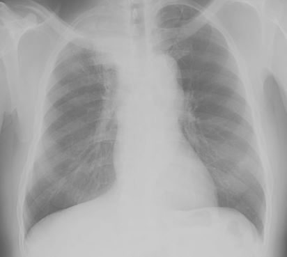
ABranchial cleft cyst(1%)
BTuberculosis(1%)
CLung abscess(1%)
DPancoast tumor(98%)
Your answerD
Correct answerD. Pancoast tumor
Vital Concept
A Pancoast tumor is a malignant tumor of the pulmonary apex that often is non-small cell carcinoma. It can classically present with Horner syndrome (ipsilateral ptosis, miosis, enophthalmos, and anhidrosis), shoulder pain, and/or signs and symptoms of neurovascular compression of the upper extremity.
Explanation
Pancoast tumor
A Pancoast tumor or superior sulcus tumor is a malignant tumor of the pulmonary apex that often is non-small cell carcinoma. Compression of the brachiocephalic vein, subclavian artery, and phrenic nerve can result in in the plethora/swelling seen in this case.
Incorrect Answers:
A. Branchial cleft cysts are congenital epithelial cysts that arise on the lateral part of the neck and become symptomatic when infected. They would not cause these symptoms or findings on an x-ray.
A useful mnemonic for branchial CLEFT - ectoderm: ~external hollow spaces
• Cleft 1: external auditory meatus
• Clefts 2 to 4: temporary cervical sinus (fail to obliterate = lateral neck branchial cleft cyst)
Branchial cleft cyst (lateral neck) vs Thyroglossal duct cyst (midline neck, moves with swallowing because "attached to tongue")
B. Tuberculosis can manifest in a variety of ways, but this image is a classic representation of a Pancoast tumor.
C. Lung abscesses have a characteristic appearance and may contain air-fluid levels.
Vital Concept: A Pancoast tumor is a malignant tumor of the pulmonary apex that often is non-small cell carcinoma. It can classically present with Horner syndrome (ipsilateral ptosis, miosis, enophthalmos, and anhidrosis), shoulder pain, and/or signs and symptoms of neurovascular compression of the upper extremity.
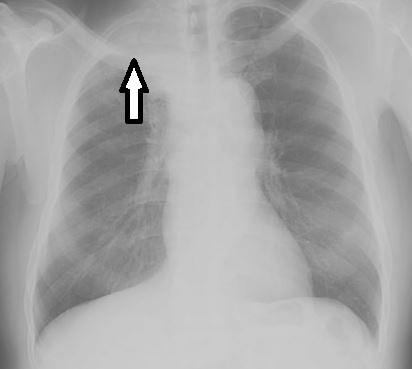
Q18
easy QID 37430
Correct
Which of the following is the appropriate BIRADS classification for the mass pictured?
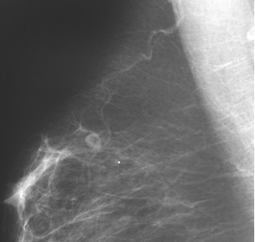
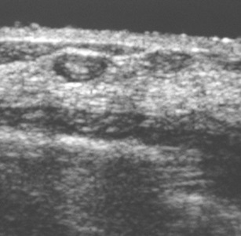
ABIRADS 0(0%)
BBIRADS 2(97%)
CBIRADS 3(2%)
DBIRADS 4(1%)
EBIRADS 5(0%)
Your answerB
Correct answerB. BIRADS 2
Vital Concept
Normal intramammary lymph nodes are circumscribed oval masses <1cm with hilar fat - abnormal features warranting biopsy include cortical thickening ≥3mm (cancer patients) or ≥5mm (screening patients), loss of hilar fat, or interval change, with metastatic nodes being poor prognostic indicators that alter TNM staging.
Explanation
BIRADS 2
A small well-defined mass with a central fatty hilum (yellow arrow) is seen in the upper outer quadrant. This is a benign-appearing intramammary lymph node. Sonographically this is confirmed as the mass appears as a very well-defined margin (green arrow) with a hyperechoic central fatty hilum (yellow arrow). An intramammary lymph node is considered a benign finding as long as it does not display suspicious features and is reported as a BIRADS 1 or 2. Nodes that have lost their reniform shape, fatty hilum, or are enlarged are suspicious.
Incorrect Answers:
A. BIRADS 0 indicates an incomplete exam in which additional imaging is required.
C. BIRADS 3 indicates a probable benign finding for which short-interval follow-up is recommended. This should have a less than 2% chance of malignancy.
D. BIRADS 4 indicates a suspicious finding for which biopsy should be considered. This is a broad category that spans from 2-95% chance of malignancy. This is further broken down into categories 4A, 4B, and 4C.
E. BIRADS 5 indicates a highly suggestive, almost certain, finding of malignancy (greater than 95%), for which appropriate action should be taken.
Vital Concept: Normal intramammary lymph nodes are circumscribed oval masses <1cm with hilar fat - abnormal features warranting biopsy include cortical thickening ≥3mm (cancer patients) or ≥5mm (screening patients), loss of hilar fat, or interval change, with metastatic nodes being poor prognostic indicators that alter TNM staging.
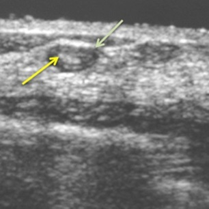
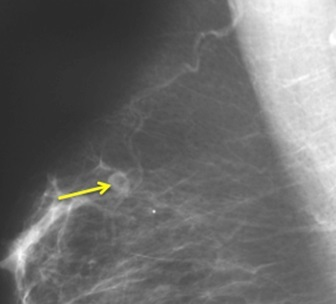
Q19
QID 37412
Correct
Which of the following constitutes the lowest risk for breast cancer?
AA 33-year-old female who is a known BRCA 1 carrier(1%)
BA 38-year-old female who underwent radiation therapy for thoracic lymphoma at age 14(1%)
CA 36-year-old female who has extremely dense breasts(91%)
DA 35-year-old daughter of a patient with Li-Fraumeni syndrome(4%)
EA 45-year-old female with a family history of breast cancer in their sister at age 48 and mother at age 54(3%)
Your answerC
Correct answerC. A 36-year-old female who has extremely dense breasts
Vital Concept
Risk factors for breast cancer are generally related to advancing age, family history (first-degree relatives, BRCA1/2 mutations), hormonal factors (early menarche, late menopause, nulliparity, late first pregnancy after age 30, prolonged hormone replacement therapy), race/ethnicity, personal history of breast cancer or atypical hyperplasia, dense breast tissue, prior chest radiation, obesity, and alcohol consumption.
Explanation
A 36-year-old female who has extremely dense breasts
Breast density confers 4-6 times increased risk compared to fatty breasts but is substantially lower than BRCA mutations, Li-Fraumeni syndrome, or strong family histories which carry up to 85% lifetime risk. While these high-risk factors warrant annual MRI screening, breast density alone typically qualifies for supplemental ultrasound, though emerging evidence suggests abbreviated MRI may benefit women with extremely dense breasts.
Incorrect Answers:
A. Women with BRCA1 and BRCA2 mutations and their untested first-degree relatives have very high risk for breast cancer.
B. Women with prior irradiation to the chest between the ages of 10-30 years have very high risk for breast cancer.
D. Women with Li-Fraumeni, Cowden, and Bannayan-Riley-Ruvalcaba syndromes and their first-degree relatives have high risk for breast cancer.
E. Women with a strong family history for breast cancer have high risk for breast cancer.
Vital Concept: Risk factors for breast cancer are generally related to advancing age, family history (first-degree relatives, BRCA1/2 mutations), hormonal factors (early menarche, late menopause, nulliparity, late first pregnancy after age 30, prolonged hormone replacement therapy), race/ethnicity, personal history of breast cancer or atypical hyperplasia, dense breast tissue, prior chest radiation, obesity, and alcohol consumption.
Q20
hard QID 37627
Incorrect
Which of the following is not a fundamental tenet of the Image Gently campaign?
AReduce or “child-size” the amount of radiation used(6%)
BScan only when necessary(2%)
CScan only the indicated region(1%)
DScan once(21%)
EObtain the best image quality possible(70%)
Your answerA
Correct answerE. Obtain the best image quality possible
Explanation
Obtain the best image quality possible
Images need only be diagnostic quality, and do not need to be perfect, as that often leads to techniques with an unnecessarily high radiation dosage. In recognition of the potential risks of radiation from diagnostic imaging procedures, particularly in the pediatric population, the Society for Pediatric Radiology formed a committee in late 2006. In 2007, this committee reached out to other major organizations and formed the Alliance for Radiation Safety in Pediatric Imaging. The Image Gently campaign wishes to provide radiologists and technologists who work in predominantly "adult" hospital settings with the tools to decrease radiation by doing four things:
Incorrect Answers:
A. First, reduce or "child-size" the amount of radiation used. Radiation dose in CT is linearly related to mA. Dose reduction can be accomplished simply by contacting the medical physicist and asking them to determine the baseline radiation dose for an adult for the equipment and compare that dose with the ACR Standards. If the doses are higher than those suggested, reduce the technique for adult patients. Next, access the Image Gently website (www.imagegently.org) and view the protocols provided for children. These protocols are independent of equipment manufacturer, age of machine, or number of detectors.
B. Second, scan only when necessary. An increased awareness about the need to discuss the risk–benefit ratio for performance of a CT examination enhances the role of the radiologist consultant and provides an opportunity for educational interaction with the child’s pediatrician, who has unique medical knowledge critical to the care of the patient. As noted by the National Council on Radiation Protection & Measurements, "any decision by a medical provider to expose a patient to ionizing radiation shall be justified." This means that the expected benefits to the patient must exceed the overall risk.
C. Third, scan only the indicated region. Protocols in children should be individualized. A follow-up CT scan in an asymptomatic child with an incidental lung nodule is unlikely to require that the entire chest be rescanned.
D. Fourth, scan once. Multiphase scanning is usually not necessary in children. CT with and without contrast material is rarely needed in children. Multiphase imaging often will double or triple the dose to the child and rarely adds to the study's diagnostic information.
Q21
hard QID 39281
Incorrect
The provider is the attending physician on the interventional service, and they receive a consultation about a procedure needed in a patient with cancer. When the provider speaks with the patient, the patient informs them that this is the first time they are hearing about their diagnosis. Which of the following errors is best exemplified in this case?
ADiagnostic error(33%)
BEquipment error(0%)
CPreventive failure(11%)
DTreatment error(15%)
Your answerC
Correct answerA. Diagnostic error
Explanation
Diagnostic error
Explanation: A diagnostic error is, according to 2015 Institute of Medicine (IOM) report (page 12 of the American Board of Radiology (ABR) non-interpretive skills manual): "failure to (a) establish an accurate and timely explanation of the patient's health problem(s) or (b) communicate that explanation to the patient".
Incorrect Answers:
B. Equipment errors occur when medical equipment intended to monitor status changes or provide therapy malfunctions, thereby hindering patient care. Equipment errors that are not caught early can lead to serious errors in diagnosis or treatment.
C. Preventive errors occur when there is a failure to provide prophylactic treatment or when there is inadequate monitoring or follow-up of treatment. Preventive errors can significantly increase the difficulty of managing certain medical issues.
D. Treatment errors occur when there is an error in the performance or administration of a therapeutic intervention. These errors include medication dosing errors or using the incorrect method of administering medication. Treatment errors also occur when there is an avoidable delay in administering treatment, or when a certain treatment is not indicated.
Q22
QID 49048
Correct
A child presents with the MRI shown. Which of the following is the most likely diagnosis?
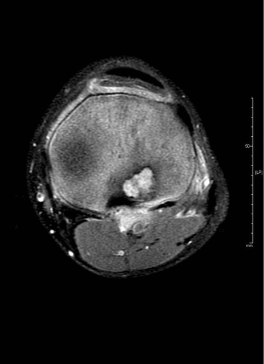
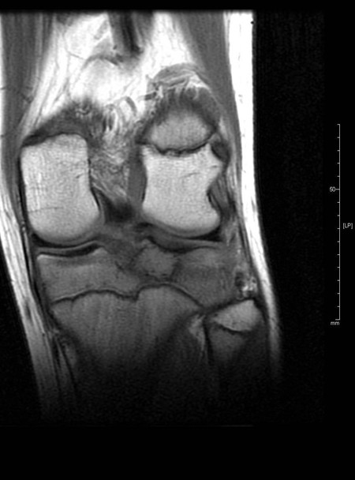
ABone infarct(5%)
BBrodie’s abscess(21%)
CChondroblastoma(70%)
DLangerhans cell histiocytosis(4%)
Your answerC
Correct answerC. Chondroblastoma
Vital Concept
Chondroblastoma shows variable T2 signal (hypointense to hyperintense) with extensive perilesional edema, hypointense rim and blooming on GRE from calcifications.
Explanation
Chondroblastoma
MRI demonstrates a lesion in the tibial epiphysis with a dark sclerotic margin and significant associated edema, most compatible with a chondroblastoma. Treatment is with surgical curettage and bone graft, although radiofrequency ablation could be used in select cases. Osteomyelitis and Langerhans cell histiocytosis are rarely in the epiphysis and would be less likely in this case. Bone infarct more commonly occurs in the central metaphysis/diaphysis of the involved bone with irregular, serpiginous borders. Absence of these imaging characteristics makes this answer less likely. Bone infarcts are also associated with a double line sign on MRI. Its presence is pathognomonic, but it is worth noting that absence of this finding does not specifically exclude bone infarct.
Vital Concept: Chondroblastoma shows variable T2 signal (hypointense to hyperintense) with extensive perilesional edema, hypointense rim and blooming on GRE from calcifications.
Q23
moderate QID 12306
Correct
Which of the diagrams shown below will be associated with the highest radiation dose to the patient, given a constant receptor air kerma and the use of automatic exposure control (AEC)? *Note that figures C and D demonstrate a receptor grid.
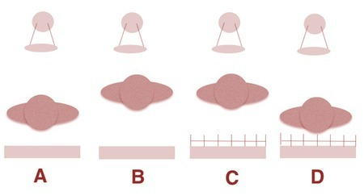
AA(2%)
BB(5%)
CC(86%)
DD(7%)
Your answerC
Correct answerC. C
Vital Concept
With AEC, increasing patient distance from x-ray source decreases patient dose because the patient benefits from inverse square law protection even though AEC increases technique to compensate. Adding a grid increases patient dose as AEC compensates for grid absorption by raising exposure factors.
Explanation
C
The closer the patient is to the radiation source (the x-ray tube), the higher the entrance air kerma (skin dose) given the inverse square law.
The use of grids is associated with an increase in the x-ray tube output to compensate for the loss of x-ray photons that get absorbed at the grid level. This will mostly be scatter radiation, which will lead to improved image quality but decreased dose at the receptor. This will in turn cause an automatic increase in the radiation dose by the AEC.
Incorrect Answers:
A. B. D. These are incorrect answers, as discussed above.
Vital Concept: With AEC, increasing patient distance from x-ray source decreases patient dose because the patient benefits from inverse square law protection even though AEC increases technique to compensate. Adding a grid increases patient dose as AEC compensates for grid absorption by raising exposure factors.
Q24
hard QID 21195
Correct
Which of the following is the critical organ for this study?
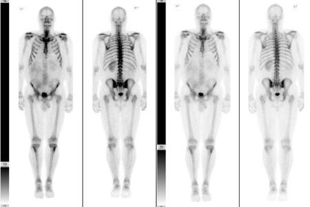
ABone marrow(13%)
BBladder(77%)
CKidneys(8%)
DLiver(0%)
EBowel(1%)
Your answerB
Correct answerB. Bladder
Vital Concept
The clearance of the radiotracer from the soft tissues is by the kidneys and collects in bladder. Bladder toxicity is the limiting factor when performing a technetium-99m study.
Explanation
Bladder
A Tc99m-MDP bone scan is shown. Bone scintigraphy is a nuclear medicine (scintigraphic) study that makes use of technetium-99m (commonly Tc-99m-methylene diphosphonate (MDP)) as the active agent. The critical organ is defined as that which receives the greatest dose of radiation and thus will limit the dose of radiopharmaceutical that can be administered. This may be the target organ or may be an organ involved in the metabolism and excretion of the radiopharmaceutical. In a bone scan, this organ is the urinary bladder, as the tracer is excreted by the kidneys and concentrated in the bladder. For this reason, patients are encouraged to drink plenty of water and empty their bladders frequently. The physical half-life of technetium-99m is 6 hours.
Incorrect Answers:
A.C.D. E. During Tc99m-MDP bone scan, the radiopharmaceutical agent is excreted through the urinary tract and concentrates in the bladder. As a result, bladder toxicity is the major limitation for the study. The bones, as the target organ, also receive a relatively high dose of radiation but not as high as the bladder.
Vital Concept: The clearance of the radiotracer from the soft tissues is by the kidneys and collects in bladder. Bladder toxicity is the limiting factor when performing a technetium-99m study.
Q25
hard QID 49056
Correct
Which of the following isotopes is typically fission-produced?
AMolybdenum-99(53%)
BCobalt-57(11%)
CF-18(10%)
DYttrium-90(26%)
Your answerA
Correct answerA. Molybdenum-99
Vital Concept
99Mo is fission-produced, 57Co and 18F are cyclotron-produced, 90Y is generator-produced from 90Sr.
Explanation
Molybdenum-99
Fission produces isotopes with neutron excess (xenon-133, I-131, and molybdenum-99), and which undergo beta minus emission. Particulate bombardment with charged particles occurs in a cyclotron and produces isotopes that are neutron deficient. Of these, some (carbon-11, nitrogen-13, oxygen-15, fluorine-18) decay by positron emission while others (cobalt-57, gallium-67, indium-111, and iodine-123) decay by electron capture. Yttrium-90 is produced as a decay product of Strontium-90 which is a daughter isotope from the fission of uranium in a nuclear reactor.
Vital Concept: 99Mo is fission-produced, 57Co and 18F are cyclotron-produced, 90Y is generator-produced from 90Sr.
Q26
hard QID 55997
Correct
Which of the following best describes the appearance of the glenoid labrum shown in the figure below?
ANormal posterior labrum, Buford complex normal variant anteriorly(15%)
BAbnormal posterior labrum, Buford complex normal variant anteriorly(3%)
CNormal posterior labrum, detached anterior labral tear with periosteal stripping(70%)
DNormal posterior labrum, normal variant sublabral foramen anteriorly(3%)
EAbnormal posterior labrum, detached anterior labral tear with periosteal stripping(9%)
Your answerC
Correct answerC. Normal posterior labrum, detached anterior labral tear with periosteal stripping
Vital Concept
Anterior labroligamentous periosteal sleeve avulsion appears as medialized and scarred anterior labroligamentous tissue with intact periosteum, representing chronic anterior labral injury with displacement along the anterior glenoid neck.
Explanation
Normal posterior labrum, detached anterior labral tear with periosteal stripping
The normal appearance of the posterior labrum is a uniformly low signal triangular morphology without undercutting or intrasubstance fluid signal, as depicted here. The anterior labrum is lifted off the glenoid, medially displaced and attached to elevated periosteum of the anterior glenoid.
Incorrect Answers:
A. A Buford complex consists of an absent or diminutive anterior labrum in the 1:00 to 3:00 position with a large/thickened middle glenohumeral ligament.
B. The posterior labrum is normal. A Buford complex consists of an absent or diminutive anterior labrum in the 1:00 to 3:00 position with a large/thickened middle glenohumeral ligament.
D. A sublabral foramen consists of a smooth marginated window through which contrast passes between the labrum and underlying glenoid, at the antero-superior portion of the glenoid (12 to 3 o’clock).
E. The posterior labrum is normal, not abnormal. The description of the anterior labrum is correct.
Vital Concept: Anterior labroligamentous periosteal sleeve avulsion appears as medialized and scarred anterior labroligamentous tissue with intact periosteum, representing chronic anterior labral injury with displacement along the anterior glenoid neck.
Q27
easy QID 21153
Correct
A 23-year-old male patient with history of anabolic steroid misuse presents with progressive right upper quadrant pain. Which of the following is the diagnosis?
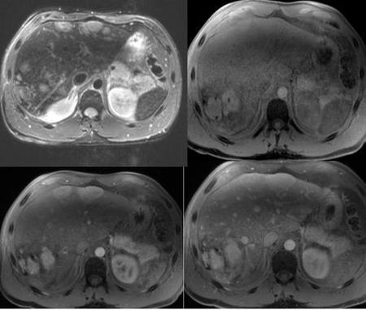
AMetastases(1%)
BHepatocellular carcinoma(1%)
CIntrahepatic cholangiocarcinoma(0%)
DHepatic adenomas(97%)
EFocal nodular hyperplasia(2%)
Your answerD
Correct answerD. Hepatic adenomas
Explanation
Hepatic adenomas
Hepatic adenomas are a rare benign hepatic neoplasm most frequently seen in the setting of use of hormonally active drugs and medications, including oral contraceptives and anabolic steroids. Generally, on MRI they appear as heterogeneously hyperintense on T2WI (blue arrows) due to fat (and potentially hemorrhage). Hemorrhage is seen here as T1 hyperintensity on the pre-contrast fat saturated images (purple arrows). Adenomas classically demonstrate heterogeneous enhancement in the arterial phase (yellow arrows). On delayed imaging (pink arrows) there is either retention of contrast (from fibrous scar tissue) or enhancement similar to background liver parenchyma. They do not significantly enhance with administration of hepatocellular-specific agents. As suggested, they are at risk for hemorrhage, especially when large.
Incorrect Answers:
A. Metastases can have a similar appearance to that described above. However, the young age of the patient and the given history should suggest a diagnosis of hepatic adenoma.
B. Hepatocellular carcinoma may appear similar to hepatic adenoma on MR imaging. Again, the best indicator of the diagnosis is the given history.
C. Intrahepatic cholangiocarcinoma is characteristically heterogeneous on T1WI with peripheral hyperintensity on T2WI representing cellular material, and central hypointensity on T2WI representing fibrosis. Frequently, there is an associated capsular retraction. Regions of fibrosis may demonstrate enhancement on delayed phase imaging.
E. Focal nodular hyperplasia (FNH) is typified by a homogeneously enhancing mass on arterial phase imaging with a T2 hyperintense scar. It further may be differentiated from hepatic adenoma with the administration of hepatocellular-specific contrast. FNH typically enhances with hepatocellular-specific agents, while adenoma does not.
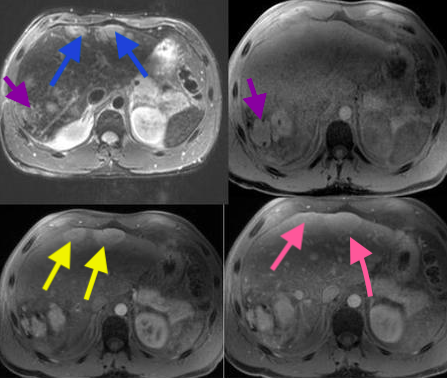
Q28
hard QID 43985
Correct
A 35-year-old woman is seen in the emergency department five hours after experiencing a sudden onset of severe headache. Her neurological examination is nonfocal, but a lumbar puncture reveals bloody cerebrospinal fluid (CSF). A noncontrast computed tomography scan (CT scan) is performed and shows a subarachnoid hemorrhage with intraventricular extension. Which of the following is the most common cause of morbidity and mortality in patients with this patient's diagnosis?
AVentriculitis(2%)
BDural sinus thrombosis(57%)
CMeningitis(1%)
DNon-obstructing hydrocephalus(18%)
ECerebral vasospasm(21%)
Your answerE
Correct answerE. Cerebral vasospasm
Vital Concept
Following subarachnoid hemorrhage, the most significant cause of morbidity and mortality (excluding the initial event or rebleed) is delayed cerebral ischemia related to cerebral vasospasm. When intraventricular extension is present, chemical ventriculitis, meningitis, and hydrocephalus are additional sources of morbidity and mortality.
Explanation
Cerebral vasospasm
Cerebral vasospasm is a serious complication following SAH. In cases with intraventricular extension, such as this one, chemical ventriculitis, meningitis, and subsequent hydrocephalus may also occur.
Delayed cerebral ischemia, in part related to vasospasm, exceeds rebleeding as the major cause of mortality and morbidity in the subgroup of SAH patients who reach the hospital and receive medical care. Vasospasm is seen in 40-70% of SAH patients on vascular imaging and becomes clinically apparent during days 4-10 post-bleed. It tends to occur in vessels near the bleed or downstream from it. The exact pathophysiological mechanism is unknown. SAH morbidity and mortality are directly related to the volume of hemorrhage. Nimodipine is a calcium channel blocker with selective effects on cerebral vessels. It is given prophylactically to prevent post-SAH vasospasm. This is the only FDA-approved indication for the drug.
Incorrect Answers:
A. Ventriculitis is more associated with patients who receive ventriculostomies. Chemical ventriculitis due to irritation from hemorrhage contents is possible here, but not the most common cause of morbidity and mortality.
B. Although uncommon, it is possible to have a dural sinus thrombosis simultaneously with, or even as a potential cause of, subarachnoid hemorrhage. It is not the most common cause of morbidity and mortality.
C. Although meningitis related to aneurysmal SAH (aSAH) does occur, it is not the most common cause of morbidity and mortality.
D. While hydrocephalus is a common consequence of SAH, it would be expected to be obstructing (not non-obstructing) in this context.
Vital Concept: Following subarachnoid hemorrhage, the most significant cause of morbidity and mortality (excluding the initial event or rebleed) is delayed cerebral ischemia related to cerebral vasospasm. When intraventricular extension is present, chemical ventriculitis, meningitis, and hydrocephalus are additional sources of morbidity and mortality.
Q29
hard QID 63857
Incorrect
The second-trimester image shown below is often considered the most sensitive and specific finding for Down's syndrome. Which of the following features is being shown?
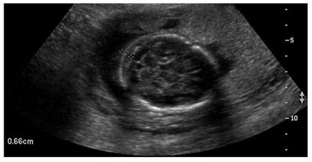
ANuchal thickness(77%)
BNuchal translucency(19%)
CCystic hygroma(2%)
DLemon skull(2%)
Your answerB
Correct answerA. Nuchal thickness
Explanation
Nuchal thickness
Nuchal fold thickness is the best ultrasonographic predictor of fetal trisomy 21. However, the risk assigned on the basis of the commonly used threshold of nuchal fold thickness ≥ 6 mm does not take into consideration the significant associations between nuchal fold thickness and gestational age and between maternal age and Down syndrome.
Nuchal thickness is measured at the level of the thalami and cerebellum and is most accurate between 18-21 weeks. If greater than 5 mm, the specificity for Down syndrome is 97%; if greater than 6 mm, the specificity is 99%.
Incorrect Answers:
B. Nuchal translucency thickening can be seen in numerous fetal anomalies and therefore not specific to Down syndrome. Nuchal translucency is measured in the first trimester only, between 11-14 weeks.
C. Cystic hygromas can be seen in Down syndrome, but are not specific to Down syndrome.
D. Lemon skull is classically seen in Chiari II malformation and spina bifida.
Q30
easy QID 2707
Correct
Which of the following sonographic features is most predictive of malignancy in the breast?
AParallel orientation(4%)
BAngular margins(92%)
CCircumscribed margin(1%)
DPosterior enhancement(3%)
Your answerB
Correct answerB. Angular margins
Explanation
Angular margins
In 1995, Stavros et al. published a paper on the usefulness of several ultrasound features in characterizing a solid breast mass as benign or malignant. Similar features have been adapted by BI-RADS. Angular margins are most predictive of breast malignancy of the options given. Spiculated and microlobulated margins are also predictive of breast malignancy.
Incorrect Answers:
A, C, and D. The choices parallel orientation, circumscribed margin, and posterior enhancement are all sonographic features more predictive of benign masses.
Q31
hard QID 5002
Correct
A 2-year-old child is being worked up for an abdominal mass. A I-123 MIBG scan is performed; fused SPECT/CT images and whole body planar images are shown below. What is the diagnosis and how does the radionuclide work?
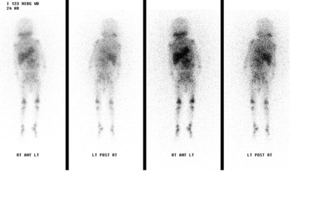
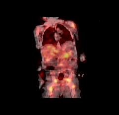
AWilms'' tumor: the radiotracer is taken up by the post-synaptic adrenergic nerves"'(1%)
BNeuroblastoma: the radiotracer is taken up by the pre-synaptic adrenergic nerves'(72%)
CNeuroblastoma: the radiotracer is taken up by the post-synaptic adrenergic nerves"'(21%)
DPheochromocytoma: the radiotracer is taken up by the pre-synaptic adrenergic nerves"'(2%)
EParaganglioma: the radiotracer is taken up by the post-synaptic adrenergic nerves"'(1%)
Your answerB
Correct answerB. Neuroblastoma: the radiotracer is taken up by the pre-synaptic adrenergic nerves
Vital Concept
I-123 MIBG demonstrates presynaptic uptake via the norepinephrine transporter on sympathetic nerve terminals. Neuroblastoma cells retain this presynaptic catecholamine transport mechanism from their neural crest origin, enabling specific tumor targeting with high specificity for staging and potential I-131 MIBG therapy.
Explanation
Neuroblastoma: the radiotracer is taken up by the pre-synaptic adrenergic nerves
The MIBG scan is used in imaging functional adrenergic tumors, in particular, neuroblastoma in children. It is actively taken into vesicles of the PRE-synaptic adrenergic nerves. In addition to the uptake within the left retroperitoneal mass, multiple abnormal foci of uptake in the bone marrow are consistent with metastatic disease.
Incorrect Answers:
A. The I-123 MIBG scan is used to image functional adrenergic tumors; Wilms' tumor does not have adrenergic innervation. In addition, the radiotracer is taken up by PRE-synaptic adrenergic nerves, not the post-synaptic nerves.
C. While the diagnosis is correct, MIBG is taken into the PRE-synaptic adrenergic nerves, not the post-synaptic nerves.
D. While MIBG imaging is used for pheochromocytoma, the age of the patient suggests that neuroblastoma would be the most likely diagnosis.
E. While MIBG imaging can be used in paragangliomas, the age of the patient and presence of diffuse metastases suggests a more aggressive tumor is present.
Vital Concept: I-123 MIBG demonstrates presynaptic uptake via the norepinephrine transporter on sympathetic nerve terminals. Neuroblastoma cells retain this presynaptic catecholamine transport mechanism from their neural crest origin, enabling specific tumor targeting with high specificity for staging and potential I-131 MIBG therapy.
Q32
easy QID 21156
Correct
A 32-year-old female patient presents for follow-up imaging of incidentally noted hepatic lesion on recent abdominal CT. MR imaging is shown below. Which of the following is the diagnosis?
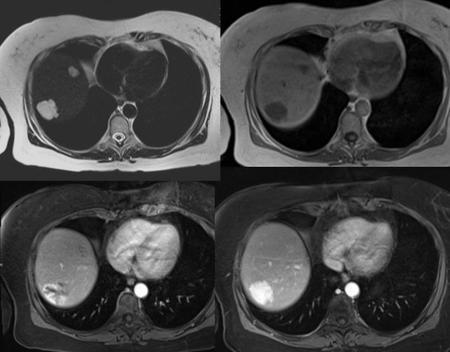
AFocal nodular hyperplasia (FNH)(5%)
BBiliary hamartoma(1%)
CHepatic cyst(0%)
DHemangioma(93%)
EBiliary cystadenoma/ cyctadenocarcinoma(1%)
Your answerD
Correct answerD. Hemangioma
Explanation
Hemangioma
The imaging characteristics are a typical appearance of hemangioma. Typical MR findings for hepatic hemangiomas include prominent hyperintense signal on T2WI (blue arrow) with the hypointense signal on T1WI (green arrow) and enhancement on post-contrast imaging beginning with peripheral, nodular enhancement and gradual filling-in of the lesion on delayed imaging (red arrows). Hemangiomas are usually of no clinical significance and require no further follow-up. On occasion, large hemangiomas can develop central scarring and fibrosis that is T2 hypointense with delayed enhancement. There is a second smaller hemangioma in the medial right hepatic lobe (yellow arrows).
Incorrect Answers:
A. Focal nodular hyperplasia is usually hypo-homogeneously isointense or slightly hyperintense on T2w images and isointense or slightly hypointense on T1w images before contrast medium administration, if the rest of the liver is fatty. A hypoattenuating central scar can be seen. FNH may demonstrate a central scar in up to 60% of lesions that are >3 cm in size and often appears as a hyperintense or hypointense stellate area, respectively, on T2 and T1-weighted images.
B. Biliary hamartomas are also known as von Meyenburg complexes and are benign biliary tract malformations that appear on MRI as T1 hypointense, T2 hyperintense, usually non-enhancing lesions (unless there are fibrotic components, which can demonstrate enhancement on delayed post-contrast imaging). They are of no clinical significance.
C. Hepatic cysts are benign congenital hepatic lesions that likely reflect an abnormally developed intrahepatic biliary duct. Typical MRI appearance is a spherical, nonenhancing, T2 hyperintense and T1 hypointense hepatic lesion without septation or nodularity. They may be seen in large numbers in cases of polycystic liver or kidney disease, as well as in tuberous sclerosis.
E. Biliary cystadenomas/cyctadenocarcinoma are cystic hepatic lesions that are often indistinguishable from their malignant counterpart, biliary cystadenocarcinomas. They demonstrate variable signal intensity on T1WI and T2WI, depending on mucoid (T1 hyperintense, T2 hypointense) or serous (T1 hypointense, T2 hyperintense) fluid content. They have prominent septae that demonstrate enhancement on post-contrast images. They are almost exclusively seen in female patients.
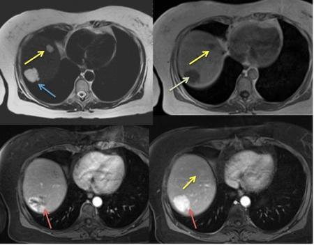
Q33
hard QID 21104
Correct
Which of the following is the most likely diagnosis in this case?
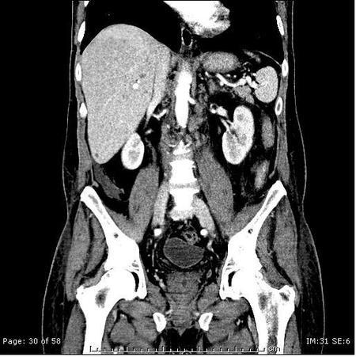
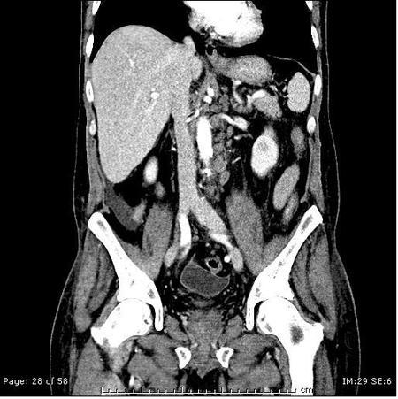
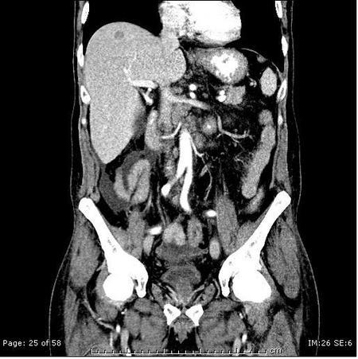
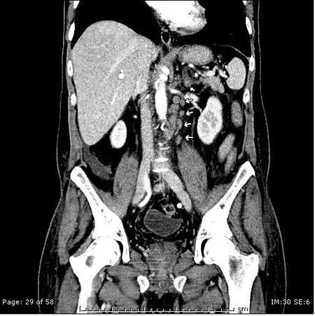
ANon-Hodgkin's lymphoma(73%)
BPolycystic liver disease(3%)
CMultiple hepatic hemangiomas(7%)
DVon Meyenburg disease(17%)
Your answerA
Correct answerA. Non-Hodgkin's lymphoma
Vital Concept
Enlarged retroperitoneal lymph nodes are characteristic of lymphoma and can help differentiate between lymphoma and other causes of multiple liver lesions with low attenuation.
Explanation
Non-Hodgkin's lymphoma
Lymphoma can present as nodal or extranodal disease. Hodgkin lymphoma and low-grade non-Hodgkin lymphoma (NHL) classically present as nodal disease. Additionally, it is worth, especially for radiologists, dividing extranodal lymphomas according to the location: central nervous system, head and neck lymphoma, thoracic lymphoma, pulmonary lymphoma, gastrointestinal lymphoma, hepatobiliary lymphoma, musculoskeletal lymphoma, cutaneous lymphoma, genitourinary lymphoma.
This patient has multiple small low-attenuation lesions in the liver. All the options are in the differential of such a finding, in addition to multifocal HCC, multiple micro-abscesses, multiple simple cysts, Caroli disease, and liver metastatic disease. The key to the right diagnosis in this case is noticing the enlarged retroperitoneal lymph nodes which can only be seen with lymphoma from the given choices.
Incorrect Answers:
B. Polycystic liver disease may be a choice but with accompanying lymph nodes, lymphoma should be the most likely diagnosis.
C. No contrast enhancement is noted consistent with hemangioma.
D. Von Meyenburg disease, or von Meyenburg complex, is characterized by multiple bile duct hamartomas and biliary microhamartomas. It is asymptomatic and usually found incidentally. It is important to differentiate from other causes of multiple liver lesions, particularly metastases. Lesions associated with von Meyenberg complex are hyperechoic on liver ultrasound.
Vital Concept: Enlarged retroperitoneal lymph nodes are characteristic of lymphoma and can help differentiate between lymphoma and other causes of multiple liver lesions with low attenuation.
Q34
easy QID 24103
Correct
A 68-year-old patient has a history of lumpectomy and radiation therapy for invasive ductal carcinoma. They now present with a tender and red breast with purulent drainage. Which of the following is the diagnosis?
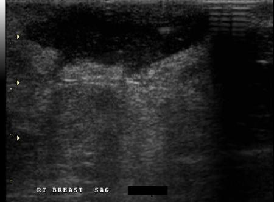
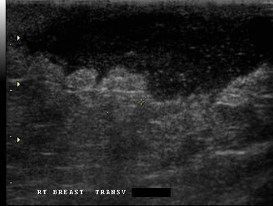
ARecurrent inflammatory carcinoma(2%)
BMastitis(2%)
CAbscess(95%)
DHematoma(0%)
ESeroma(0%)
Your answerC
Correct answerC. Abscess
Vital Concept
Breast abscess appears as a hypoechoic collection with mobile internal debris and acoustic enhancement, characteristically demonstrating thick echogenic hypervascular periphery on Doppler imaging while lacking internal flow, often multiloculated in appearance.
Explanation
Abscess
It is important to recognize that an abscess can have almost any appearance. Though they typically appear as heterogeneous and complex cystic and solid masses as seen here, they will at times form a sinus tract to the skin and drain purulent material. They can be seen in many settings, including post-surgical, in nursing mothers, or trauma.
Incorrect Answers:
A and B. Mastitis is generalized inflammation, without a focal drainable collection or mass. Inflammatory carcinoma can appear very similar to an abscess and is the main differential consideration. It demonstrates skin thickening, which is typically more dramatic than that seen in abscess or mastitis. Additionally, one should never see nipple retraction with abscess or mastitis, whereas it is a common finding in inflammatory carcinoma along with the “orange peel” appearance of the skin seen on physical exams. This is secondary to the infiltrative and inflammatory reaction produced by the tumor. Abscess, mastitis, and inflammatory carcinoma all show increased echogenicity in the background fibroglandular tissue due to surrounding edema, which is a nonspecific feature. The history is key in these cases, as an abscess or mastitis will have a more acute time course.
D. A hematoma can also have a quite variable appearance on ultrasound. They go through an evolution, starting with hyperechoic clot, and eventually organizing into a complex cystic and solid mass that often has fluid-fluid levels. A history of trauma is typical in these cases.
E. A seroma should be a simple or complicated cyst, depending on the proteinaceous content.
Vital Concept: Breast abscess appears as a hypoechoic collection with mobile internal debris and acoustic enhancement, characteristically demonstrating thick echogenic hypervascular periphery on Doppler imaging while lacking internal flow, often multiloculated in appearance.
Q35
easy QID 21202
Correct
Which of the following is the physical half-life of the radionuclide in this study?
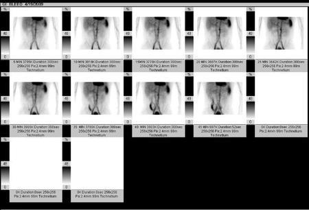
A1.2 min(1%)
B6.0 hours(94%)
C73.1 hours(4%)
D78.3 hours(1%)
E8.0 days(1%)
Your answerB
Correct answerB. 6.0 hours
Explanation
6.0 hours
This is a tagged RBC scan, which uses Tc-99m as the radionuclide. This is the most commonly encountered radionuclide, and its half-life is 6 hours. Unfortunately, for testing purposes, half-lives should be memorized. The other answers are half-lives of other common radionuclides.
Incorrect Answers:
A. 1.2 min is the half-life of Rb-82.
C. 73.1 hrs is the half-life of TI-201.
D. 78.3 hrs is the half-life of Ga-67.
E 8.0 days is the half-life of I-131.
Q36
hard QID 2928
Correct
Which of the following is the most likely time-to-repetition (TR) and time-to-echo (TE) for the non-contrast MRI image shown?
ATR = 10; TE = 50(3%)
BTR = 500; TE = 50(4%)
CTR = 4000; TE = 150(19%)
DTR = 900; TE = 300(4%)
ETR = 4000; TE = 700(70%)
Your answerE
Correct answerE. TR = 4000; TE = 700
Vital Concept
MRCP techniques use heavily T2-weighted sequences with long echo times to depict the fluid within the biliary ductal system as high signal intensity, while the background signal intensity from liver and other parenchymal organs is suppressed.
Explanation
TR = 4000; TE = 700
The image is of an MR cholangiopancreatography (MRCP). Thick slab MRCP uses heavily T2-weighted sequences to maximize contrast between fluid-filled bile ducts (long T2 relaxation time) and surrounding soft tissue (short T2). The very long TE of approximately 700ms allows soft tissue signal to decay while preserving bright fluid signal, while the long TR of about 4000ms permits complete T1 recovery between excitations to maintain pure T2-weighting.
Incorrect Answer:
A.B.C.D. MRCP is performed with a long TR (4000) and very long TE (700). The other answers are incorrect.
Vital Concept: MRCP techniques use heavily T2-weighted sequences with long echo times to depict the fluid within the biliary ductal system as high signal intensity, while the background signal intensity from liver and other parenchymal organs is suppressed.
Q37
moderate QID 18061
Correct
A 32-year-old woman presents with left hip pain and no history of malignancy. What is the most appropriate next step?
AImmediate biopsy(19%)
BOrthopedic oncology referral(1%)
CShort-interval radiographic follow-up with consideration of advanced imaging(72%)
DNo further workup needed(6%)
EPET scan for staging(0%)
Your answerC
Correct answerC. Short-interval radiographic follow-up with consideration of advanced imaging
Vital Concept
A painful well-circumscribed medullary lesion with coarse calcifications in a young adult raises a differential including enchondroma, early low-grade chondrosarcoma, and intraosseous lipoma with dystrophic calcification. Pain alone warrants advanced imaging, as low-grade chondrosarcoma can be radiographically indistinguishable from enchondroma without MRI or CT correlation.
Explanation
Short-interval radiographic follow-up with consideration of advanced imaging
This lesion has uniformly low-risk features — geographic morphology, well-defined sclerotic margin, medullary location, no periosteal reaction, endosteal erosion, or soft tissue mass — in a patient without cancer history. However, because the patient is symptomatic and the diagnosis is not pathognomonic, short-interval surveillance with advanced imaging (CT or MRI) for further characterization is appropriate rather than discharge or immediate biopsy.
Incorrect Answers:
A. Biopsy is reserved for aggressive or indeterminate features, or known malignancy history — none of which are present here.
B. Orthopedic oncology referral is appropriate for intermediate/high-risk lesions or locally aggressive benign tumors requiring treatment.
D. Symptomatic lesions without a definitive benign diagnosis warrant follow-up imaging rather than no further workup.
E. No aggressive features justify systemic staging.
Vital Concept: A painful well-circumscribed medullary lesion with coarse calcifications in a young adult raises a differential including enchondroma, early low-grade chondrosarcoma, and intraosseous lipoma with dystrophic calcification. Pain alone warrants advanced imaging, as low-grade chondrosarcoma can be radiographically indistinguishable from enchondroma without MRI or CT correlation.
Q38
hard QID 3034
Correct
Shown below are transabdominal images of the pelvis of a 45-year-old male patient with a chief complaint of dysuria. Which of the following diagnoses is correct?
AAcute prostatitis(1%)
BProstate carcinoma(2%)
CCalcified prostatic utricle cyst(79%)
DUreterocele(6%)
Your answerC
Correct answerC. Calcified prostatic utricle cyst
Vital Concept
Prostatic utricle cysts are small (<10 mm) pear-shaped T2 hyperintense midline cysts that rarely extend beyond the prostate superior border, distinguishing them from larger Mullerian duct cysts which characteristically extend cephalad beyond the prostate.
Explanation
Calcified prostatic utricle cyst
The transabdominal images of the prostate show a midline cyst with echogenic walls. The presence of calcification may indicate a chronic nature of this cyst with dystrophic changes. The MRI shows a posterior midline T2 hyperintense cyst, most compatible with benign utricle cyst based on its characteristic appearance/location. Prostatic utricle cysts result from focal dilatation of the prostatic utricle, an embryological remnant representing a small diverticulum of the prostatic urethra located at the midline between ejaculatory duct openings. These developmental cysts form when the utricle fails to regress completely during embryogenesis, creating a blind-ending pouch that can accumulate fluid and dilate over time.
Incorrect Answers:
A. Acute prostatitis is not specifically associated with T2 hyperintense cyst. This would usually present with diffuse enlargement of the prostate with adjacent inflammatory change.
B. No specific evidence of a prostate malignancy is seen.
D. The images show the lesion in the prostate and not involving the urinary bladder/ureter.
Vital Concept: Prostatic utricle cysts are small (<10 mm) pear-shaped T2 hyperintense midline cysts that rarely extend beyond the prostate superior border, distinguishing them from larger Mullerian duct cysts which characteristically extend cephalad beyond the prostate.
Q39
easy QID 82778
Correct
A 65-year-old man has had 3 syncopal episodes over the past month, which have occurred while he was running. He has no known prior heart disease. Which of the following is the most appropriate definitive intervention for this condition?
ASurgical resection(96%)
BCatheter embolization(2%)
CLisinopril(0%)
DFurosemide(0%)
EAnticoagulation(2%)
Your answerA
Correct answerA. Surgical resection
Vital Concept
Intracardiac tumors are usually benign, and most are myxomas. The most common location is the left atrium. The mass can obstruct the mitral valve, causing impaired cardiac output and syncope. Surgical resection is necessary to avoid thrombi and stroke.
Explanation
Surgical resection
The majority of intracardiac tumors are benign. Most are myxomas, which tend to reside in the left atrium, either fixed to the muscle or to the atrial septum. They can either be attached on a broad base or on a pedicle. Myxomas with a rough surface pose a risk for thrombus formation, with possible embolization into the systemic circulation and stroke. Obstruction of the mitral valve can occur, causing heart failure or syncope. A “plop” may be heard on auscultation. Production of IL-6 by some myxomas can cause constitutional symptoms. All myxomas require prompt surgical resection due to the potential for emboli. Regrowth is uncommon, but periodic imaging is advised.
Incorrect Answers:
B. Catheter embolization is not a therapy for atrial myxomas.
C. Afterload reduction does not address the need for removal of the mass.
D. There is no evidence of fluid overload, so diuresis is not indicated.
E. Anticoagulation may be necessary preoperatively, but the definitive treatment is surgical resection.
Vital Concept: Intracardiac tumors are usually benign, and most are myxomas. The most common location is the left atrium. The mass can obstruct the mitral valve, causing impaired cardiac output and syncope. Surgical resection is necessary to avoid thrombi and stroke.
Q40
hard QID 43646
Incorrect
The abnormality seen here is associated with persistence of which of the following structures?
APrimitive trigeminal artery(15%)
BStapedial artery(70%)
COtic artery(8%)
DHypoglossal artery(5%)
EProatlantal artery(2%)
Your answerA
Correct answerB. Stapedial artery
Explanation
Stapedial artery
The axial temporal bone CT shows a laterally displaced internal carotid artery (red arrow) within the middle ear and in continuity with the carotid canal (green arrow). On the coronal section, this is redemonstrated, along with soft tissue at the tympanic segment of the facial nerve (orange arrow). This finding represents an aberrant internal carotid artery and associated persistence of the stapedial artery (the soft tissue within the facial nerve canal), a finding it is often associated with. Up to 30% of aberrant internal carotid arteries (ICAs) have an associated persistent stapedial artery. This is a rare congenital vascular anomaly that may present as a pulsatile middle ear mass or that may appear as an incidental finding. The stapedial artery is transiently present in normal fetal development, connecting the branches of the future external carotid artery (ECA) to ICA. Postembryonic persistence of the stapedial artery is rare, and it may present as a pulsatile middle ear mass or may be found incidentally during middle ear surgery. It is also very important to note that one should not mistake an aberrant ICA for glomus tympanicum paraganglioma.
Incorrect Answers:
A. Persistent primitive trigeminal artery arises from the junction between petrous and cavernous ICA, and runs posterolaterally along the trigeminal nerve, or crosses over or through the dorsum sella. In utero, the trigeminal artery supplies the basilar artery before development of the posterior communicating and vertebral arteries. The PTA, vertebral, posterior communicating, and caudal basilar arteries are often hypoplastic.
C. A persistent otic artery is said to arise from the internal carotid artery within the carotid canal and emerge from the internal acoustic meatus to join the basilar artery inferiorly.
D. A persistent hypoglossal artery is second in frequency to the trigeminal artery. It arises from the distal cervical ICA, usually between C1 and C3. After passing through an enlarged hypoglossal canal, it joins the basilar artery inferiorly. If large, the ipsilateral vertebral artery and PCOM are often hypoplastic or absent. There is an association with concurrent aneurysms.
E. The proatlantal artery represents a persistent carotid-vertebrobasilar anastomosis. It can originate from either the ICA, ECA, or rarely CCA. Regardless of origin, the artery joins the vertebral artery. If large, then the ipsilateral vertebral artery is small or absent.
Q41
hard QID 20797
Correct
A 16-year-old male patient presents with nausea, vomiting, and altered mental status. MR images were acquired. Which of the following diagnoses best accounts for the findings shown?
AAcute cerebellar infarction(2%)
BLhermitte-Duclos disease(8%)
CAcute cerebellitis(70%)
DLow-grade cerebellar astrocytoma(8%)
EAcute disseminated encephalomyelitis (ADEM)(13%)
Your answerC
Correct answerC. Acute cerebellitis
Explanation
Acute cerebellitis
The images show narrowing of the fourth ventricle and basal cisterns. T2-weighted MRI demonstrates signal hyperintensity diffusely throughout the cerebellum (arrowheads). Multiple etiologies can result in cerebellitis, including idiopathic, infectious (e.g., enterovirus), toxic/ metabolic (e.g., cyanide poisoning), and demyelinating (e.g., acute disseminated encephalomyelitis) processes. Common imaging findings reflect diffuse edema of the cerebellum— T2/FLAIR hyperintensity on MRI and cerebellar hypoattenuation on CT. The vast majority of cases affect both cerebellar hemispheres, although unilateral involvement has been reported. The differential diagnosis includes subacute cerebellar infarction (which is usually unilateral), infiltrative neoplasm (which is usually unilateral or asymmetric), and acute disseminated encephalomyelitis (brain stem and supratentorial involvement are common). The most common presentation is in a younger child with symptom onset following a viral illness.
Incorrect Answers:
A. MR images shown demonstrate evidence of diffuse cerebellar edema with bilateral T2 hyperintensity (arrowheads) and narrowing of the fourth ventricle and basilar cisterns (arrows). Acute cerebellar infarction may result in abnormal T2 hyperintensity within the gray and white matter of the cerebellum, but infarction is usually unilateral and presenting symptoms would be more severe than those described below.
B. Lhermitte-Duclos disease is a rare congenital abnormality involving a benign cerebellar mass with associated irregular, thickened cerebellar folia. The diffuse, symmetric T2 hyperintensity depicted here is inconsistent with Lhermitte-Duclos disease.
D. It is reasonable to consider in the differential diagnosis. Much like the findings below, an infiltrative cerebellar neoplasm can result in poorly marginated T2 hyperintensity, edema/swelling of the cerebellum, and resultant narrowing of the extra-axial spaces. However, an infiltrative neoplasm is unlikely to appear as strikingly symmetrical as cerebellitis does. MR spectroscopy is occasionally helpful in distinguishing between an infiltrative cerebellar neoplasm and cerebellitis.
E. Acute disseminated encephalomyelitis is reasonable to consider based on clinical history. Acute disseminated encephalomyelitis (ADEM) commonly occurs in children, as does the correct diagnosis, but the distribution of MR signal abnormality in the images below suggests a different diagnosis. Lesions in ADEM appear as multiple T2/FLAIR hyperintensities, commonly affecting white matter and basal ganglia. The posterior fossa can be affected, but uniform diffuse cerebellar T2 hyperintensity would not be consistent with a diagnosis of ADEM. Nearly all patients present within a month following vaccination or viral illness.
Q42
easy QID 4976
Correct
A sample image from a cardiac computed tomography scan (CT) is shown below. Which of the following is the most likely diagnosis?
ALiposarcoma(1%)
BLipomatous hypertrophy of the interatrial septum(92%)
CAtrial myxoma(2%)
DAtrial thrombus(4%)
Your answerB
Correct answerB. Lipomatous hypertrophy of the interatrial septum
Vital Concept
Lipomatous hypertrophy of the interatrial septum shows pathognomonic dumbbell-shaped fat attenuation in the interatrial septum with characteristic fossa ovalis sparing on CT/MRI.
Explanation
Lipomatous hypertrophy of the interatrial septum
Contrast-enhanced computed tomography (CT) images display low attenuation due to fat density in the interatrial septum, which is most characteristic of lipomatous hypertrophy of the interatrial septum, sparing the fossa ovalis.
Lipomas are the second most common benign cardiac tumor in adults, with myxoma being the most common. If the fatty mass projects into the right atrium, it is called a lipoma, while lipomatous hypertrophy is confined to the atrial septum.
Lipomatous hypertrophy of the interatrial septum has the same cellular composition as a lipoma but is not encapsulated. These benign tumors are most frequently seen in middle-aged and older adults, often associated with obesity. These tumors may grow to a large size without causing symptoms. They demonstrate the same signal intensity as subcutaneous and epicardial fat on all MRI sequences.
Incorrect Answers:
A. Liposarcoma is very rare and usually manifests as a large, infiltrating mass. Foci of macroscopic fat are occasionally seen.
C. Myxomas appear as intracardiac masses, most often in the left atrium and attached to the interatrial septum. They are usually heterogeneously low-attenuating (approximately two-thirds of cases).
D. Computed tomography (CT) is a well-established—but until recently, rarely used—technique for imaging intracardiac thrombi. On CT, an intracardiac thrombus is depicted as a filling defect.
Vital Concept: Lipomatous hypertrophy of the interatrial septum shows pathognomonic dumbbell-shaped fat attenuation in the interatrial septum with characteristic fossa ovalis sparing on CT/MRI.
Q43
moderate QID 60760
Correct
Based on Nuclear Regularity Commission (NRC) guidelines, how should a medical officer report an NRC defined “medical event”?
AVia telephone by the next calendar day(88%)
BCertified letter within 3 weeks(9%)
CIn person at a regional office within 1 month(1%)
DNo notification is required(2%)
Your answerA
Correct answerA. Via telephone by the next calendar day
Explanation
Via telephone by the next calendar day
The NRC specifically states “The licensee shall notify by telephone the NRC Operations Center no later than the next calendar day after discovery of the medical event” in 10 CFR Part 35 – Subpart M. Additionally, both the patient and referring physician should be notified within 24 hours. Within the next 15 days, a formal written report should be submitted to the appropriate NRC regional office and should include the licensee name, prescribing physician name, brief description of the event, why the event occurred, the effect on the individual receiving the administration, what actions have been taken or are planned to prevent recurrence, and certification that the licensee notified the individual.
Incorrect Answers:
B. Initial telephone notification should be performed by the next calendar day. A formal written report should be submitted within 15 days.
C. In person notification is not required.
D. Telephone notification followed by a written report is mandated by the NRC and failure to do so may result in license revocation.
Q44
easy QID 39271
Correct
A 19-year-old female patient presents to the emergency department with left lower quadrant pain that has been present for a week and is getting progressively worse. Which of the following is the likely diagnosis?
ADermoid(4%)
BEndometrioma(6%)
CPyosalpinx(0%)
DHemorrhagic cyst(89%)
ECystic ovarian neoplasm(0%)
Your answerD
Correct answerD. Hemorrhagic cyst
Explanation
Hemorrhagic cyst
The ultrasound of the left adnexa demonstrates a circumscribed mass with lacelike internal echoes and no flow on color Doppler imaging and through transmission posteriorly. These are findings of a hemorrhagic cyst. Hemorrhagic ovarian cysts exhibit widely variable size and imaging features. They often contain internal echoes, strands, and septations (lacelike internal echoes), or blood clots, depicted as more solid-appearing focal components along the inner wall or as sheets of echogenicity traversing the middle of the lesion. Because they are predominantly cystic, hemorrhagic ovarian cysts exhibit good through transmission. Because there is no solid tissue component to a hemorrhagic cyst, Doppler evaluation is negative.
Incorrect Answers:
A. A dermoid appears as a cystic and solid mass. Characteristic sonographic features include an echogenic plug with posterior acoustic shadowing (tip of the iceberg sign) or a dot-and-dash pattern.
B. Endometriomas are foci of ectopic endometrial tissue, which may occur in many locations, including the ovaries. They typically appear as a mass with homogeneous low-level internal echoes. Additionally, they rarely present acute symptoms.
C. Pyosalpinx would appear as a tubular structure with internal echogenicity due to inflammatory and proteinase debris. Further, the clinical presentation would be one of intense pain, particularly on pelvic exams with potential for fevers.
E. Cystic ovarian neoplasms (either serous or mucinous) appear as multiseptated cystic and solid masses with variable degrees of internal echogenicity. Since they have soft tissue components, they will demonstrate internal flow on color Doppler imaging.
Q45
moderate QID 4984
Correct
Review the following chest x-ray. The predominant abnormality is most commonly associated with which of the following?
ARickets(2%)
BKlippel-Feil syndrome(84%)
CRheumatoid arthritis(1%)
DJeune syndrome(9%)
EAchondroplasia(3%)
Your answerB
Correct answerB. Klippel-Feil syndrome
Vital Concept
Klippel-Feil syndrome is a complex heterogeneous entity that results in cervical vertebral fusion. Klippel-Feil syndrome is associated with Sprengel's deformity of the shoulder, characterized by elevation of the scapulae with a bone bridge from the left scapula to the cervical spine (arrow) consistent with an omovertebral bone.
Explanation
Klippel-Feil syndrome
Cervical spine fusion indicates Klippel-Feil syndrome, a congenital disorder resulting from abnormal segmentation of cervical vertebrae during embryogenesis. The connection between the cervical spine and medial scapula represents an omovertebral bone (arrow), which is consistent with a Sprengel deformity. These conditions frequently occur together because the scapula and midcervical vertebrae develop simultaneously during the eighth week of gestation. When cervical vertebral segmentation fails, concurrent scapular descent abnormalities often result in the scapula remaining in an elevated position with persistent bony or fibrous connections to the cervical spine, as seen here.
Incorrect Answers:
A.C. This is not a feature of rickets or rheumatoid arthritis.
D. Jeune syndrome and achondroplasia are forms of skeletal dysplasia, which have no association with a Sprengel deformity.
E. Achondroplasia is a congenital genetic disorder resulting in rhizomelic dwarfism and is the most common skeletal dysplasia. No association with Sprengel deformity.
Vital Concept: Klippel-Feil syndrome is a complex heterogeneous entity that results in cervical vertebral fusion. Klippel-Feil syndrome is associated with Sprengel's deformity of the shoulder, characterized by elevation of the scapulae with a bone bridge from the left scapula to the cervical spine (arrow) consistent with an omovertebral bone.
Q46
hard QID 47283
Correct
Prioritization for thyroid fine-needle aspiration (FNA) should be given to a 2.5 cm nodule with which of the following two characteristics?
AMixed cystic and solid with macro- calcifications.(16%)
BSolid with macro- calcifications.(72%)
CCystic with smooth margins.(9%)
DAlmost entirely cystic with a comet-tail artifact.(1%)
Your answerB
Correct answerB. Solid with macro- calcifications.
Vital Concept
A 2.5 cm solid nodule with macrocalcifications would be at least TR3 under ACR TI-RADS (3 points: 2 for solid composition, 1 for macrocalcifications) and meets the size threshold for fine-needle aspiration since TR3 nodules are biopsied at 2.5 cm.
Explanation
Solid with macro- calcifications.
The goal in evaluating a thyroid nodule is to determine whether it is benign or malignant. Patients with thyroid cancer should receive a diagnosis and undergo treatment at an earlier stage that reduces possible morbidity and mortality due to the disease while avoiding unnecessary tests and surgery in patients with benign nodules.
The American College of Radiology (ACR) has a classification system on thyroid nodules called TI-RADS. See the diagram included for details.
Incorrect Answers:
A. C. D. According to the above diagram, FNA would not be warranted for these characteristics.
Vital Concept: A 2.5 cm solid nodule with macrocalcifications would be at least TR3 under ACR TI-RADS (3 points: 2 for solid composition, 1 for macrocalcifications) and meets the size threshold for fine-needle aspiration since TR3 nodules are biopsied at 2.5 cm.
Q47
hard QID 56730
Correct
A routine screening mammogram is obtained in a 53-year-old female with no family history of breast cancer. Based on the views provided below, which of the following conclusions can be drawn?
AMagnetic resonance imaging (MRI) has no role in breast cancer screening.(10%)
BThe patient has a history of reduction mammoplasty.(10%)
CThere is suboptimal positioning of the breasts.(79%)
DThere are right breast post-radiation changes.(1%)
Your answerC
Correct answerC. There is suboptimal positioning of the breasts.
Explanation
There is suboptimal positioning of the breasts.
Breast positioning is the key factor affecting a mammogram. During mammography, many cases are improperly positioned and inconclusive mammographic results are obtained. Lesions may be identified only on one mammographic view. So tailoring mammography imaging to the specific needs of the individual patient is very important. Proper compression helps in spreading the breast tissue and avoids distortion of the breast parenchyma. It also places the pectoralis muscle and nipple at the same level. Compression is also helpful in differentiating between a lesion and superimposed normal structure as it spreads apart overlying islands of dense tissue. Sometimes, a spot compression device is used, with or without magnification, to better delineate the area of interest.
The posterior nipple line (PNL) extends perpendicularly from the nipple to the pectoralis muscle. Failure of this line to intersect theright pectoralis muscle demonstrates suboptimal positioning with inadequate depth.
Additionally, when viewing bilateral mediolateral oblique (MLO) images, both pectoralis muscles should converge to form a “V” inferiorly, which is absent in this case. Optimal positioning could also be measured by the length from the pectoralis muscle to the nipple, which should fall within 1 cm on the craniocaudal and mediolateral oblique views. Assessing for optimal breast positioning should be performed regularly for each mammogram interpreted.
This examination fails to include the pectoralis major on the left side and also does not included the inframammary folds bilaterally.
Incorrect Answers:
A. In this patient, the breasts are at least heterogeneously dense (50-75% density). MRI breast imaging is usually appropriate as supplemental screening for women with heterogeneously or extremely dense breasts, particularly those at intermediate risk or higher. The DENSE trial demonstrated that supplemental MRI in women with dense tissue significantly increases cancer detection rates while reducing interval cancers, suggesting a mortality benefit.
B. Reduction mammoplasty would show nipple elevation and retraction of the lower breast.
D. No cutaneous thickening or parenchymal scarring is seen to suggest prior radiation.
Q48
hard QID 2872
Correct
A 50-year-old male presents with chronic progressive leg weakness. Which of the following is the most likely diagnosis?
ADorsal thoracic arachnoid web(58%)
BChiari malformation(11%)
CMetastatic disease(2%)
DEpendymoma(15%)
Your answerA
Correct answerA. Dorsal thoracic arachnoid web
Vital Concept
Dorsal arachnoid webs cause characteristic focal dorsal cord indentation (scalpel sign) with compensatory ventral cord displacement and associated syringomyelia due to altered CSF dynamics. The web itself is rarely directly visualized, making recognition of these secondary imaging signs crucial for diagnosis and appropriate surgical referral for web lysis.
Explanation
Dorsal thoracic arachnoid web
MRI shows ventral cord displacement (green arrow) with "kinking" in the mid-thoracic spine with posterior CSF space demonstrating the scalpel sign (red arrow). There is a syringohydromyelia (yellow arrow) proximal to the kinking as a result of obstructed CSF flow. The location and appearance are typical of dorsal thoracic arachnoid web.
The main differential diagnosis would be an arachnoid cyst or ventral cord herniation. Of note, there is a CSF flow artifact dorsal to the cord (blue arrow) related to turbulent flow, which is a frequent finding allowing differentiation from an arachnoid cyst. Kinking of the cord tends to be more focal with no scalpel sign morphology of the CSF space in the case of ventral cord herniation.
Incorrect Answers:
B. Syringohydromyelia can be seen in Chiari malformation, but this patient has obstructed flow secondary to a dorsal thoracic arachnoid web.
C. The imaging findings are typical for dorsal thoracic arachnoid web. There is no mass to suggest metastatic disease.
D. There is no spinal cord mass to suggest ependymoma.
Vital Concept: Dorsal arachnoid webs cause characteristic focal dorsal cord indentation (scalpel sign) with compensatory ventral cord displacement and associated syringomyelia due to altered CSF dynamics. The web itself is rarely directly visualized, making recognition of these secondary imaging signs crucial for diagnosis and appropriate surgical referral for web lysis.
Q49
hard QID 2717
Incorrect
For a known cardiac metastasis, which of the following primary malignancies is the most common cause?
ALymphoma(4%)
BLung cancer(70%)
CMelanoma(24%)
DRenal cell carcinoma(2%)
Your answerC
Correct answerB. Lung cancer
Vital Concept
Lung cancer is the most common cause of cardiac metastasis, accounting for nearly 40% of cases, primarily driven by high prevalence in the general population and overall aggressive behavior.
Explanation
Lung cancer
Metastases to the heart and pericardium are much more common than primary cardiac tumors and are generally associated with a poor prognosis, often correlated with large metastatic disease burden. Lung cancer is the most common cause of cardiac metastasis, accounting for nearly 40% of cases, primarily driven by high prevalence in the general population and overall aggressive behavior. Breast cancer and hematological cancers are the second and third most common causes of cardiac metastasis.
Incorrect Answers:
A. Hematological malignancies, such as lymphoma, account for up to 20% of cardiac metastases.
C. Melanoma is likely to metastasize to the heart and occurs in up to 50 to 60% of patients with metastatic melanoma. However, since the overall prevalence of melanoma is significantly less than lung cancer, it is not the most common cause of cardiac metastasis.
D. Though renal cell carcinoma can extend directly to the right atrium via the renal vein/IVC, it is also less prevalent than lung cancer and is not the most common cause of cardiac metastasis.
Vital Concept: Lung cancer is the most common cause of cardiac metastasis, accounting for nearly 40% of cases, primarily driven by high prevalence in the general population and overall aggressive behavior.
Q50
moderate QID 39272
Correct
Which of the following is accurate regarding the adnexal mass seen in this 34-year-old female patient with dysmenorrhea and dyspareunia?
AThey are rarely multiple(4%)
BInfertility is a known complication(82%)
CThe abdominal wall is the most common location(3%)
DThrough transmission is a specific sonographic feature(10%)
Your answerB
Correct answerB. Infertility is a known complication
Explanation
Infertility is a known complication
The provided sonographic images show a well-circumscribed ovarian mass with homogeneous low-level internal echoes blue arrow) which has posterior through transmission (yellow arrow). There is no flow on color Doppler imaging (purple arrow). These are features specific for endometrioma. Classically, the presenting symptoms of endometriosis are the triad of infertility, dysmenorrhea, and dyspareunia. However, this triad is only present in 10% of patients. Although typically associated with infertility, endometriosis has been identified in pregnant patients.
Incorrect Answers:
A. Multiple lesions are not infrequent and may be correlated with severity of symptoms.
C. Endometriosis is the presence of endometrial glands or stroma, or both, in abnormal locations. They can be found anywhere within the abdominal and pelvic cavity, even in the abdominal wall in cases of prior surgery. However, the most common locations for deposits are the ovaries.
D. The typical sonographic appearance is diffuse low-level internal echoes as a result of the hemorrhagic debris and acoustic enhancement. This appearance occurs in 95% of cases and is considered the classic finding on ultrasound examination. However, it may occur with cysts and is a common finding in the pelvis. Features of multilocularity and hyperechoic wall foci may additionally be present. Anechoic cysts are rare.
Q51
easy QID 49615
Correct
Which of the following is the most likely patient history?
AExtracapsular left breast implant rupture after fall(91%)
BRadiation therapy(7%)
CFibroadenoma(2%)
DLymphoma(0%)
Your answerA
Correct answerA. Extracapsular left breast implant rupture after fall
Vital Concept
Extracapsular silicone rupture on ultrasound shows the snowstorm sign - focal nodules with widespread increased echogenicity and loss of normal parenchymal boundaries as silicone escapes beyond the fibrous capsule.
Explanation
Extracapsular left breast implant rupture after fall
Ultrasound shows two echogenic areas with posterior acoustic shadowing. This is the snowstorm appearance of extracapsular silicone. None of the other options would demonstrate a similar appearance.
Vital Concept: Extracapsular silicone rupture on ultrasound shows the snowstorm sign - focal nodules with widespread increased echogenicity and loss of normal parenchymal boundaries as silicone escapes beyond the fibrous capsule.
Q52
easy QID 43898
Correct
Which of the following is correct regarding the lesion shown?
AIt is most often a malignant lesion(0%)
BIt is most often treated with surgical resection(1%)
CThere is no gender predilection(3%)
DThe classical clinical presentation is nocturnal pain that is relieved with NSAIDS(96%)
EIt is most often diagnosed in late adulthood(0%)
Your answerD
Correct answerD. The classical clinical presentation is nocturnal pain that is relieved with NSAIDS
Explanation
The classical clinical presentation is nocturnal pain that is relieved with NSAIDS
An area of cortical thickening can be appreciated on the medial side of the femur on the frontal radiographs. The CT images provided show a small lucent nidus with dense surrounding solid periosteal reaction and sclerosis. This is a classic and diagnostic imaging appearance of an osteoid osteoma. The classical clinical presentation is night-time pain that is relieved with NSAIDs.
Incorrect Answers:
A and E. Osteoid osteomas are benign bone-forming tumors, seen most often in childhood and adolescence.
B. In the past, osteoid osteomas have been treated with surgical resection. However, CT-guided percutaneous radiofrequency ablation is being used with increasing frequency.
C. There is a male predilection (~ 3:1).
Q53
moderate QID 20589
Correct
A 21-year-old athlete presents to the emergency department with acute left foot pain and inability to bear weight. Their x-ray is shown below. Which of the following is recommended for the management of this patient?
AWatchful waiting(0%)
BSurgery(92%)
CTraction pinning(5%)
DCasting(2%)
EWalking boot(1%)
Your answerB
Correct answerB. Surgery
Vital Concept
Lisfranc injuries, also called Lisfranc fracture-dislocations, are the most common type of dislocation involving the foot and correspond to the dislocation of the articulation of the tarsus with the metatarsal bases.
Explanation
Surgery
Incorrect Answers:
A.C.D.E. The diagnosis is Lisfranc ligament avulsion. Indications for non-operative treatment include non-displaced injuries that are stable with weight-bearing or poor surgical candidates, including non-ambulatory patients, patients with significant comorbidities that have high risk for complications (e.g. severe vascular disease, peripheral neuropathy) or patients with pre-existing inflammatory arthritis. The indication for operative management is an unstable injury. These can be divided into joint-preserving procedures and joint sacrificing procedures. Joint preserving procedures include temporary fixation, pending definitive management, and ORIF. Joint sacrificing surgery includes arthrodesis of the 1st, 2nd, and 3rd tarsometatarsal joints or midfoot arthrodesis. Internal fixation is the most common treatment.
Vital Concept: Lisfranc injuries, also called Lisfranc fracture-dislocations, are the most common type of dislocation involving the foot and correspond to the dislocation of the articulation of the tarsus with the metatarsal bases.
Q54
hard QID 2910
Correct
An x-ray energy spectrum is shown. Which of the following statements is true when moving from spectrum A to spectrum B?
AThe maximum energy is decreased.(2%)
BThis is the result of decreased kVp.(4%)
CThis is the result of decreasing the mAs.(28%)
DThis is the result of adding a filter.(64%)
EThis will result in a higher patient dose.(2%)
Your answerD
Correct answerD. This is the result of adding a filter.
Vital Concept
Filtration, in this case, results in decrease in the amount of photons on the lower end of the energy spectrum (movement of the lower energy x-intercept to the right) as well as a decrease in overall relative intensity (overall downward movement of the curve along the y-axis).
Explanation
This is the result of adding a filter.
There are several factors to consider when evaluating the x-ray spectrum curve. The intersection of each curve with the x-axis at the lower keV levels shows a shift of the lower energy photons to a higher level. This reduces patient dose by having less of the "non-diagnostic" photons in the spectrum. The intersection of each curve with the x-axis at the higher keV levels defines the maximum energy of the beam and is set by the kVp. The area under the curve measures the total output of the beam. You can also see that the average energy of the beam is shifted towards the right, meaning a higher average energy, or more penetrating beam. In this example, there is a decrease in the amount of low-energy photons with a small decrease in the overall output. The beam is hardened (has a higher average energy), but the maximum energy remains the same. These are characteristics of added filtration.
Incorrect Answers:
A. The maximum energy remains the same.
B. The maximum energy remains the same. Decreasing kVp would decrease the maximum energy, lower the total output, and lower the average beam energy.
C. Lowering the mAs would only shift the curve downward and would not increase the average energy, nor decrease the energy of the minimum photons.
E. Patient dose will be lowered as a result of removal of low energy photons and decreased output.
Vital Concept: Filtration, in this case, results in decrease in the amount of photons on the lower end of the energy spectrum (movement of the lower energy x-intercept to the right) as well as a decrease in overall relative intensity (overall downward movement of the curve along the y-axis).
Q55
hard QID 21512
Incorrect
Which of the following is true regarding measurement of nuchal translucency?
AMeasurement is typically made within 18 to 20 weeks(9%)
BNormal measurement is < 5 mm(14%)
CShould only be performed by facilities/sonographers with special certification(49%)
DThere is a greater than 90% detection rate for trisomy 21 with nuchal translucency measurement(11%)
ECan only be accurately measured in approximately 85% of patients due to technical factors(17%)
Your answerB
Correct answerC. Should only be performed by facilities/sonographers with special certification
Vital Concept
Nuchal translucency is the normal fluid-filled subcutaneous space identified at the back of the fetal neck during the late first trimester and early second trimester (11 weeks 3 days to 13 weeks 6 days). Increased nuchal translucency is associated with fetal abnormality, and increases are also directly proportional to the risk of miscarriage and fetal demise. Measurement should be made in facilities certified by the Fetal Medicine Foundation.
Explanation
Should only be performed by facilities/sonographers with special certification
Nuchal translucency is the normal fluid-filled subcutaneous space at the back of the fetal neck during the late first trimester and early second trimester (11 weeks 3 days to 13 weeks 6 days). It is measured on a sagittal image through the neck of the fetus.
Nuchal translucency measurement is part of neural tube screening which typically consists of NT measurement, as well as free B-hCG and PAPPA-A serum measurements. Increased nuchal translucency is thought to be a nonspecific sign of fetal abnormality. It can be associated with aneuploidy, structural defects, Noonan syndrome, omphalocele, and VACTERL anomalies. The risk of fetal demise or miscarriage is proportional to increased nuchal translucency thickness. As the second trimester nears, the region of nuchal translucency can regress or evolve into nuchal edema or cystic hygroma. Spontaneous regression is not a sign of a normal karyotype, but in fetuses with a normal karyotype, regression is associated usually with a normal outcome.
Standardized assessment by an experienced center is important. All NT screens should be performed by facilities/sonographers that have been certified by the FMF (Fetal Medicine Foundation).
Incorrect Answers:
A. B. NT is typically measured from weeks 11 to 14 with a normal measurement being less than 3 mm. D. Tests (NT measurement, as well as free B-hCG and PAPPA-A serum measurements) have a high sensitivity for chromosomal abnormalities and neural tube defects. Together, they have over 90% detection rate for aneuploidy. However, NT alone has only an 80% detection rate for trisomy 21.
E. While technically challenging to measure, there is a near 100% success rate with a skilled sonographer.
Vital Concept: Nuchal translucency is the normal fluid-filled subcutaneous space identified at the back of the fetal neck during the late first trimester and early second trimester (11 weeks 3 days to 13 weeks 6 days). Increased nuchal translucency is associated with fetal abnormality, and increases are also directly proportional to the risk of miscarriage and fetal demise. Measurement should be made in facilities certified by the Fetal Medicine Foundation.